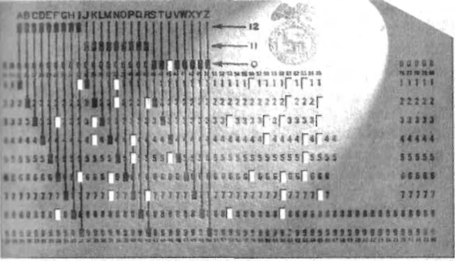

To achieve his goals, each man had to cooperate in an international
campaign of corporate schizophrenia designed to achieve maximum deniability
for both Dehomag and IBM. The storyline depended upon the circumstance
and the listener. Dehomag could be portrayed as the American-controlled, al-
most wholly-owned subsidiary of IBM with token German shareholders and
on-site German managers. Or Dehomag could be a loyal German, staunchly
Aryan company baptized in the blood of Nazi ideology wielding the power
of its American investment for the greater glory of Hitler's Reich. Indeed,
Heidinger and Watson both were willing to wave either banner as needed.
Both stories were true. Watson had seen to that.
Dehomag's Aryan facade was carefully constructed. In newly Nazified
Germany, many good and decent businessmen looked the other way, dread-
ing the day stern-faced men sporting swastika armbands knocked on the
door demanding anti-Semitic loyalty oaths, subscriptions of financial sup-
port, and ultimately invasive Party control via kommissars. At the same time,
some could not wait to join the movement. Dehomag was among those who
could not wait. IBM was among those who did not mind.
Early on, Heidinger sought out the sponsorship of the Nazi Party hier-
archy. He wanted Dehomag draped in the authority not only of the govern-
ment but the Nazi Party itself. However, before the NSDAP would ally with
Dehomag, the powerful Political and Economics Division demanded, in
December 1933, that the company answer some pointed questions. The
Party's probe was designed to detect just who controlled the corporation,
whether the firm was German enough, Nazi enough, and strategic enough to
receive the Party's seal of approval.8
Heidinger proffered incisive, if dubious, written replies. "My company
is an entirely independent organization which has acquired patent rights
from their American owners," he insisted, and is merely bound to pay "royal-
ties." But, argued Heidinger, "any worries as to whether or not excessive
amounts of German funds are being exported are thoroughly unjustified,"
especially since most of the royalties remained in blocked German bank
accounts until released by the government.9
One Party question inquired why Dehomag could not sell any wholly
German-built office equipment instead of American products. Heidinger
explained that the Reich could not achieve its goals without Hollerith tabula-
tors. "[A]side from ours, no other punched card machinery is manufactured
in Germany," asserted Heidinger, adding, "Our machines cannot possibly
displace other machines, because the work they are called upon to perform
cannot be accomplished by the other machines."10
Heidinger concluded his written comments by reminding the Party
examiners that Dehomag had been "entrusted . . . with the compilation of
statistics for the Prussian census." He added knowingly, with that air of omi-
nous lack of specificity so common in those days, "Moreover, negotiations
are now pending in Berlin, their object being an agreement between my
company and the SA [Storm Troopers] high command in that city for the
compilation of certain necessary statistics."11 Nothing more need be said.
Dehomag was approved.
Verbatim translations of the NSDAP's questions and Heidinger's answers
- along with the German originals—were delivered to the New York office
within several business days for review by Watson and other IBM executives.12
New York agreed with a sub-rosa approach if it could garner the Nazi
Party affiliation needed to secure more government contracts. IBM willingly
diminished its own identity as part of the effort. New York executives were
advised of a Dehomag request: "in the future, on all machines shipped to
them [Dehomag], the following designations are to be omitted: 1) Interna-
tional Business Machines, 2) International." A 1934 memo from IBM's Paris
managers didn't even want IBM billed for small German registration fees,
explaining, "we all should be very careful in exploiting or advertising the
name of IBM Corp. in Germany."13 Watson himself would continue his high
visibility, but would be portrayed during his frequent visits not as a foreign
controller of Dehomag as much as a supporter of IBM technology in Nazi
Germany.
Heidinger's assertions of allegiance to Nazi ethics and independence
from foreign influence were certainly acceptable to IBM in New York—so
long as everyone in the company understood the truth: Watson remained in
charge. To ensure that Watson in fact retained full control of Dehomag's
activities, IBM NY insisted on several provisions.
First, Dehomag by-laws would allow New York to supercede the German
board of directors at any time. Dehomag's corporate by-laws five and six de-
clared that the corporation would be comprised not only of shareholders and a
board of directors, but of an unusual third component: "representatives and
attorneys—in-fact... determined by the shareholders." These would be IBM
accountants, managers, and lawyers who could project Watson's authority on a
day-to-day basis. The fifth by-law added, "The shareholders shall be in a po-
sition to annul the board of directors." By-law seven ordered, "The represen-
tatives [Watson's attorneys and accountants] shall follow the instructions of
the shareholders and the board of directors, if there is one."14
Second, Heidinger's token 10 percent share of the Dehomag were his
to own, but only so long as he remained with the company. The stock could
not be sold without the shareholders' permission, according to by-law four.15
Clearly, the power at Dehomag was wielded by the shareholders. Wat-
son and IBM NY owned 90 percent of the stock. This gave Watson and his
attorneys veto power over any Dehomag activity and indeed over Heidinger
himself.
Watson also wanted his own people on the Dehomag board to counter-
balance Heidinger. Representing IBM NY were trusted Watson represen-
tatives Walter Dickson Jones, who operated out of IBM's Paris office, and
John K. Holt, who mainly operated out of IBM's Geneva office.16 Heidinger
acquiesced to the concept of foreign control, but he resented Watson's inter-
ference. The first test came quickly. It involved German Sales Manager Karl
Hummel.
Watson had cultivated a personal alliance with Hummel. He had ar-
ranged for Hummel to attend IBM's sales training school at Endicott, New
York, and entertained Hummel and his wife in his home. The Hummels and
Watsons periodically exchanged gifts. Watson knew how to develop loyalty.
He wanted Hummel on the German board. December 15, 1933, Watson
made his move, sending a radiogram to Dehomag General Manager Her-
mann Rottke: "To give Dehomag fuller representation in Germany, I request
that Karl Hummel be made second director (Geschaftsfuhrer) and his name
so listed. . . . Kindly notify me when this is done."17 Watson had not asked
Heidinger first.
Heidinger erupted, and just days before the new factory was to open
in a grand ceremony, Rottke cabled back: "According to German law, not
I but only shareholders meeting and board of directors have authority to
promote Karl Hummel . . . sending your cable and a copy of this answer
to Heidinger."18
Sarcastic and threatening, Heidinger on December 20 dashed off a
warning to Watson. "I do not seriously fear ... your positive will in the future
to put me aside in questions of importance for the Dehomag. Nevertheless, I
of course feel deeply depressed that you are not interested to hear my opin-
ion [about] ... such an important decision.... That feeling of depression ...
might be considered as not important. But what could be important is the
following.19
"As you know," Heidinger continued, "we all considered it of greatest
importance to proof [sic] that the Dehomag is a German-managed company
... free from American influence . . . our authorities are very sensitive if they
should believe to be fouled." He hinted that the Nazi Party might feel the
need to install two of its own kommissars on the board. During a recent con-
ference at the Nazi Party headquarters, Heidinger had reassured ranking
officials that Dehomag would function free of American influence. Now the
Hummel appointment was showing the opposite, he claimed, adding that
Watson's move would "shock" Party stalwarts and create a "dangerous" situa-
tion for the company.20
Watson went into damage control mode. Upon receiving Heidinger's irk-
some missive, he cabled Rottke, who would soon sail to America lor meetings
at IBM: "Do nothing further about Hummel until I see you in New York."21
It was difficult, but Watson humbled himself. In a rambling, two-page
letter filled with spelling errors, Watson apologized over and over again,
regretted Heidinger's upset, professed his unqualified friendship to Ger-
many, recalled his pleasant times in Berlin, enumerated his forthcoming din-
ner engagements with the German ambassador, and staunchly assured, "you
have nothing to worry about in connection with the German government, so
far as my connection with our German business is concerned." Watson
blamed not his lack of respect for Heidinger, but a simple typo. In his origi-
nal cablegram asking for Hummel's appointment, Watson averred, "one word
was misquoted. The cablegram dictated was 'I suggest,' and I find in the copy
it was written "request' ... it is always my policy ... to make a suggestion,
rather than a request."22
Suggest. Not request.
Unappeased, Heidinger shot back in a melodramatic flourish, "it was a
real and great joy for me to receive your letter . . . [and] to see that the
biggest part of the trouble arose from the mistake of using the word 'request'
instead [of] 'suggest' which ... formally settles the most dangerous point. ..
I hardly can express how happy I am about the friendly manner in which you
explain... the mistaken wording of your cable."23
Heidinger's message was cabled to Rottke, who at that moment was
steaming across the Atlantic on the SS President Roosevelt. Rottke had the
cable retyped on letterhead and handed it to Watson once he landed in New
York. Hummel, it was decided, would be promoted to senior management,
but not sit on the board. The conflict was over. Watson filed his original dic-
tation copy of that December cablegram to Rottke. On line two the word
"request" was originally typed. Watson edited the cable, scratched out
"request" but then upon reflection wrote it back in by hand and signed it.
"Suggest" was never in the document. It was always "request."24
JANUARY_8,1934.
In a corner of Dehomag's vast punch card operation within the great
Karstadthaus census complex at Berlin's Alexanderplatz, with morning light
streaming in behind them through banks of tall parallel windows, several
dozen officials of the Prussian Statistical Office were joined by leaders of the
Nazi Party in full uniform and Dehomag officials in their finest suits to
solemnly recognize the coming revolution of data processing and the newly
forged al li ance with International Business Machines.25
Hands reverently clasped either behind their backs or across their belt
buckles, shoulders and arms touching in fellowship, the assemblage stood in
awe of this day, the day Germany would unveil its own factory producing
Hollerith machines. The President of the Prussian Statistical Office, Dr. Hop-
ker, delivered brief remarks using the euphemisms and crystal clear ambigui-
ties of the day. "[T]he irresistible force of the National Socialist government
. . . demands the [census] results faster than ever before," he declared,
adding, "German statistics understands this impatience." He then explained
exactly how the punch card process worked, distilling the anonymous Ger-
man masses into specific names organized by race and religion, as well as
numerous other characteristics.26
Accompanied by a dense din in adjacent halls that clicked and whirred
like locusts swarming a field, Heidinger stepped to the front to speak. With
the passion of a die-hard ideologist simultaneously presenting an omnipotent
gift to the nation and fulfilling a life-long personal dream, he spoke of the
demographic surgery the German population required.
"The physician examines the human body and determines whether ...
all organs are working to the benefit of the entire organism," asserted Hei-
dinger to a crowd of company employees and Nazi officials. "We [Dehomag]
are very much like the physician, in that we dissect, cell by cell, the German
cultural body. We report every individual characteristic ... on a little card.
These are not dead cards, quite to the contrary, they prove later on that they
come to life when the cards are sorted at a rate of 25,000 per hour according
to certain characteristics. These characteristics are grouped like the organs of
our cultural body, and they will be calculated and determined with the help
of our tabulating machine.27
"We are proud that we may assist in such a task, a task that provides our
nation's Physician [Adolf Hitler] with the material he needs for his examina-
tions. Our Physician can then determine whether the calculated values are in
harmony with the health of our people. It also means that if such is not the
case, our Physician can take corrective procedures to correct the sick circum-
stances. . . . Our characteristics are deeply rooted in our race. Therefore, we
must cherish them like a holy shrine, which we will—and must—keep pure.
We have the deepest trust in our Physician and will follow his instructions in
blind faith, because we know that he will lead our people to a great future.
Hail to our German people and der Fuhrer!"28
The entire group then filed out of the massive building and motored to
IBM's new factory in the quiet Berlin section of Lichterfelde to attend the
official opening. At 10:30, Dehomag employees stopped thei r work to gather
for the great event. Tall trees along the perimeter were still nearly barren
from the Berlin winter. The swastika-bedecked square in front of the four-
story factory complex was already jammed with hundreds of neighborhood
onlookers and well wishers.29
Just before noon, two columns of Storm Troopers took up positions
along either side of the walkway leading to Dehomag's front door. A band
from the SA's 9th Regiment played Nazi victory songs. Finally, the NSDAP
hierarchy arrived.30
Dehomag had invited Nazi higher-ups representing the organizations
most important to the future of IBM's partnership with the Third Reich.
From the German Labor Front came Rudolf Schmeer, a last-minute stand-in
for Dr. Robert Ley, leader of the organization. The German Labor Front was
the militant coalition responsible for mobilizing unemployed Nazi millions
into both newly created jobs and vacated Jewish positions. The Front also
inducted Germans into regimented squads that functioned as veritable mili-
tary units. So important was Dr. Ley and his German Labor Front that the
entire Lichterfelde factory opening was delayed two days because he took ill.
Only when it became clear he would not recover for days was the event sud-
denly rescheduled with Schmeer, accompanied by an entourage of poten-
tates,
standing
in.31
At Schmeer's side was A. Gorlitzer representing the SA, the rough and
ready Storm Troopers, the violent edge of Hitler's forces. Gorlitzer was a
powerful Nazi. When Goebbels became Propaganda Minister, Gorlitzer took
his place in the Storm Trooper organization. Now, the presence of Gorlitzer,
in gleaming, black leather boots and fighting uniform, would testify to the
importance of Dehomag in Hitler's future plans.32
As the invited Nazi officials paraded through echelons of honor guard,
the Brown Shirts pumped their arms rigidly diagonal. Schmeer, Gorlitzer,
and the other leaders returned the disciplined Hitler salute with a casual,
almost cocky bent-elbowed gesture, their open palms barely wafting over
their shoulder.33
Bouquets decorated Dehomag's reception hall. One large swastika
emblem dominated the front of the podium, and an even larger swastika flag
hung across the wall. Music inside was provided by an NSDAP men's choir.
To record the event, a tall, circular microphone stood nearby.34
The company's most important users were there as well. Heidinger's
guest list included the directors of the Reichsbank and other financial institu-
tions, the Police Post Office, Ministry of Defense Reich, Reich Statistical
Office, and an executive contingent from the Reichsbahn, that is, German
Railway.35 The future was in the cards—a future of names, of police files and
concentration camps, of bank accounts and asset transfers, of war offices and
weapons production, of endless statistical campaigns and registrations, and
of trains. So many trains. The men and organizations assembled would help
shape that future in ways people were only beginning to imagine. Representing
Watson at the event was his personal representative, Walter Jones. Jones was the
Paris-based manager of all European operations and a man who would one day
become chairman of IBM Canada.36
Framed by swastikas front and rear, a clearly impressed Jones was the
first to speak. He proclaimed in German, "It is an outstanding honor and
privilege for me to be with you and to represent Mr. Thomas J. Watson, pres-
ident of International Business Machines, on the occasion of the formal
opening of this magnificent factory . . . the new and permanent home of
Dehomag."37
Repeatedly using Nazi buzzwords for economic recovery, Jones made
clear that Mr. Watson agreed to the new construction "because he realized
your organization had outgrown the facilities . . . [and] the time was propi-
tious ... as it would give employment to many idle workmen and thus help
. . . the unemployed." Peppering Watson's name and imprimatur throughout
his address, Jones praised, "the noble work undertaken by your government
in its aim to give work to every German citizen."38
When Heidinger came to the front, nattily dressed with a small hand-
kerchief peeking from his suit jacket pocket, the man was clearly emotional.
"I feel it almost a sacred action, if in this hour I consecrate this place of
our mother earth," he began. Reviewing Dehomag's turbulent history, he
described how the tiny company had persevered despite a lack of financing,
the Great War, and the suffocating post-War inflation.39
Although at that very time, Heidinger was battling Watson over the
appointment of Hummel, in this moment of Nazi fulfillment, Heidinger was
effusive. Recalling IBM's acquisition of Dehomag, he recast the story not as
an acrimonious takeover but as a financial rescue by a benevolent friend of
the German people. "I express our deepest appreciation and our thanks for,
the noblesse not to be surpassed, proved by our creditor . . . International
Business Machines Corporation under the management of their president,
Thomas J. Watson, in our condition of distress.... [IBM] could have been in
a position to take over our entire firm by . . . enforcing their claim for bank-
ruptcy ... but [instead] purchased a share in our company."40
Continually invoking Nazi re employment cliches, Heidinger promised
that Dehomag would provide "bread and work" for German citizens. In that
vein, he said that IBM had calculated the cost of a grand opening banquet
and instead would contribute the 10,000 Reichsmarks to the Winter Subsidy,
a Nazi program donating funds and food to those thrown into deeper job-
lessness by the international anti-Nazi boycott.41
He concluded by unveiling a building plaque commemorating the fac-
tory both to "the national awakening of the German people" and to its
future. Heidinger concluded by asking that "the blessing of heaven may rest
upon this place."42
Final remarks were offered by Schmeer on behalf of the powerful Ger-
man Labor Front. "German men, German women," he proclaimed, "the fact
that we are on the way up under Hitler's leadership despite the present condi-
tions was doubted by many, not just by our enemies, but also by people who
were willing to work honestly and diligently. The opening of this factory . . .
shows that the road Hitler has prescribed and which he took last year was
right, namely to bring trust into the German economy. People in the past were
not lacking commitment to hard work but they lacked trust . . . the Volks
community now present in this factory is here to stay, and stay for all eter-
nity... It will produce goods, which will help our people in their ascent."43
Snapping into respect, Schmeer pumped his arm forward exclaiming, "I
now ask you to collect our joy and cry out: 'Our Fuhrer, Adolf Hitler, Sieg
Heil!'" The crowd reciprocated with fire: Sieg Heil! The choir burst into the
national anthem, "Deutschland uber Alles."44
Marching out enthusiastic and reassured, swept into the moment, the
regaled Brown Shirts chanted the "Horst Wessel Song."45
Soon Hitler's flags will wave
Over every single street
Enslavement ends
When soon we set things right!
For IBM and Dehomag both, it was an extraordinary day of Nazi com-
munion. Two days later, Jones sent off verbatim translations of the speeches
to Watson with an enthusiastic cover letter declaring, "as your representative,
I attended the formal opening . . . I have never witnessed a more interesting
ceremony." Jones attached a fist of all the Nazi figures that attended, and
even made clear that the dignitaries included the SA's "Gorlitzer, who suc-
ceeded Dr. Goebbels in the latter's former position." Jones' letter proudly
mentioned "a full company of Nazi storm troups [sic] with band" and
promised IBM's Leader that plenty of photos would follow.46
Watson sent a personal letter to Heidinger. "Mr. Jones sent me a copy of
the speech you made at the opening of the new factory in Berlin . . . and I
have read it with a great deal of interest. .. you are certainly to be congratu-
lated upon the manner in which you conveyed your thoughts." The company
was so proud of the event that Dehomag printed commemorative programs
of the event with photographs and transcripts of the speeches made at both
the census complex and the factory.47
There was no turning back now. IBM and the Nazi party had bonded.
Swastikas and corporate slogans had found their common ground. Day and
night, the Jewish names clattered through IBM systems, faster and faster, city
by city, profession by profession. Dehomag was the Third Reich's informa-
tional deliverer. As such, they were afforded a special place in the mindset of
Nazi planners. It was an awesome responsibility for Dehomag and IBM, but
one they accepted with doctrinaire devotion.
The feeling was captured by one Nazi newspaper, Der Deutsche, which
sent a reporter to cover the Lichterfelde ceremonies. The paper quoted Hei-
dinger on the nature of the company. Heidinger explained it this way: "Chil-
dren's character is determined by their parents. Firms' by their founders."48
GERMANY WAS quietly tabulating.
While Hitler's rhetoric was burning the parade grounds and airwaves,
while Storm Troopers were marching Jews through the streets in ritual
humiliations, while Reich legislative decrees and a miasma of regional and
private policies were ousting Jews from their professions and residences,
while noisy, outrageous acts of persecution were appalling the world, a qui-
eter process was also underway. Germany was automating.
Hollerith systems could do more than count. They could schedule, ana-
lyze, and compute. They could manage.
Several dozen Hollerith systems were already in use by a small clique
of German industrial firms and government offices.49 But now Hitler's Reich
discovered that in its quest for supremacy, it could mechanize, organize, and
control virtually all aspects of private and commercial life, from the largest
industrial cartel to the humblest local shopkeeper. Just as people would be
categorized and regimented down to the least characteristic, so would all of
German business be analyzed to the smallest detail—and then subject to
Nazi discipline. The economy could recover. People could go back to work.
But it would all he done toward a single, totally coordinated Nazi goal.
A global movement was loudly organizing to shatter the German econ-
omy and topple the repressive Hitler regime by denying economic recovery,
prolonging German joblessness, and boycotting German commerce. But IBM
was mobilizing its financial and engineering might to do the opposite. Gen-
eral Manager Rottke echoed IBM's attitude at the Lichterfelde factory open-
ing, declaring, "We are able to hereby assist our government in its battle
against unemployment." Work and bread was the theme IBM and Dehomag
used again and again to describe their venture—all in support of the
National Socialist goal. As Heidinger told his audience, "Public interest pre-
vails over private interest."50
Hollerith technology had become a German administrative way of life,
Punch cards would enable the entire Reich to go on a war footing. For IBM,
it was a bonanza.
Dehomag's client list sparkled. Electrical combines such as Siemens in
Berlin and Lech-Elektrizitatswerke in Augsburg. Heavy industry such as
Mannesmann in Diisseldorf and I.G. Farben in Frankfurt. Automakers such
as Opel in Russelsheim and Daimler-Benz in Stuttgart. Retail stores such as
Woolworth and Hertie in Berlin. Optical manufacturers such as Zeiss in Jena
and Zeiss Ikon in Dresden. Chocolate factories such as Schokoladenfabrik in
Tangermunde. Coffee producers such as Kaffee Handels A.G. in Bremen.51
Aircraft engines: 10 customers; coal mining: 7 customers; chemical plants:
18 customers; electrical products: 10 customers; motor vehicle industry: 11
customers; shipbuilders: 2 customers; railroads, buses, trams, and other trans-
portation: 32 customers; insurance companies: 26 customers; banks: 6 cus-
TOMERS; public utilities: 16 customers; iron and steel: 19 customers; turbines,
engines, and tractors: 7 customers.52
Leather tanning, washing machine manufacture, liquor, paint and var-
nishes, cigarettes, perfumes, railway car assembly, ball bearings, rubber,
petroleum, shoes, oleomargarine, asbestos, explosives.53
Reichspost, Reichsbahn, Pension Funds, the Luftwaffe, the Navy.54
Payroll, inventory control, material strength calculations, personnel,
finance, scheduling, product usage, and manufacturing supervision.55 There
was virtually no business that could not benefit from punch card technology.
Dehomag deftly controlled the data operations of the entire Reich.
Moreover, one Dehomag customer account could represent dozens of
machines. Hollerith systems involved an ensemble of interconnected devices
that could be manufactured in a variety of configurations. Punchers, proofers,
verifiers, sorters, tabulators, alphabetizers, multipliers, printers. I.G. Farben
installed arrays in Offenbach, Bitterfeld, Berlin, Hoechst, and other locations.
Daimler-Benz utilized machines in Berlin, Stuttgart, Genshagen, and other sites.
Junkers employed Hollerith devices in Magdeburg, Leopoldshall, Kothen,
Dessau, and numerous other cities. Municipalities everywhere used the ma-
chines. Frankfurt am Main's Public Works Department alone maintained an ex-
tended suite of punchers, verifiers, tabulators, multipliers, and sorters. Statistical
offices—federal, regional, and local—could not lease enough systems.56
Gleichschaltung, that is, total central coordination, demanded that end-
less accountings be submitted regularly to government bureaus, Nazified
trade associations, and statistical agencies. Kommissars and government regu-
lations required companies to install Hollerith machines to ensure prompt,
uniform, up-to-the-minute reports that could be reprocessed and further tab-
ulated. The Reich Statistical Office's Department I was officially charged with
the responsibility of helping companies transition to the elaborate Hollerith
methodology. Statistical bureaus hired thousands of new staffers just to keep
up with the data flow.57
Hitler's Germany began achieving undreamed of efficiencies. The
Reichsbahn was a vital customer for Dehomag, deploying full or partial sys-
tems in Essen, Cologne, Nuremberg, Mainz, Frankfurt, Hannover, and nearly
every other major connection point. Some 140 million passengers annually
were booked through Dehomag card sorting systems. Punch cards made the
trains run on time and even evaluated engine efficiency when pulling certain
types of freight. Records in some railway operations that previously required
300 people six months to organize could now be computed by a staff of
fifteen working for just a week.58
Customers such as Krupp, Siemens, and the Deutsche Bank were able
to reduce their operating costs and clerical staffs by as much as half, and
plow those human and financial resources into sellable goods and services.
Manpower could be shifted as needed from plant to plant by companies and
deployed from city to city by the German Labor Front.59
To meet fast-expanding demand, Dehomag hired more than 1,000 new
employees to staff the new factory at Lichterfelde. Everywhere throughout
the plant, newly installed machine tools were fabricating Hollerith devices.
Workshops buzzed, cranked, and whirred with Beling & Lubke precision
lathes, Jung surface grinders, Boley milling machines, Hille high-speed drills,
Auerbach & Scheibe 3-spindle drill presses, Thiel metal saws, Karger thread-
cutting lathes, and Universal grinding machines.60 Metal shavings, oil cans,
iron rods, tin coils, ball bearings, alloy sheets, and rubber rollers combined
with bent elbows, squinting eyes, wedging bands and brows wiped by the
sleeves of work smocks to create a manufacturing miracle. IBM zeal and Nazi
devotion coalesced to help the Reich recover and strengthen.
Lichterfelde was overwhelmed with orders. It established a "shock
department" for the speedy manufacture of spare parts, retrofitted an old
disused IBM plant from pre-merger days, and converted it to a workshop.
Outside storage, some 1,200 square meters costing more than RM 12,000
annually, was rented. Workmen shutded materials back and forth from the
storage site to the overcrowded Lichterfelde site where even corridor space
was at a premium. "Our own workshops (technical) grew to such an extent,"
complained Heidinger in a report to IBM NY, "that every square meter of
space was overfilling with machines and persons, and the acute shortage of
space became more and more critical."61
Dehomag's explosive growth arose not only from a dictatorial mar-
shalling of all commerce, but also because of a completely new industry
within Nazi Germany: race science. Identifying who was a Jew—either by
certifying Aryan lineage or exposing Jewish ancestry became big business
overnight. Hollerith alone possessed the technology to efficiendy provide the
answers Nazi raceologists craved.
RACE SCIENCE, rooted in the international Eugenics movement, had long
been a pseudo-scientific discipline within the Nazi culture. In Germany, the
field transformed from vague debates into a lucrative reality when two fac-
tors converged. It began when a multiplicity of anti-Jewish decrees and pri-
vate provisos demanded Jewish ousters and pure Aryan descent. But these
racist requirements clashed with what Dehomag had exposed when it com-
puled the 1933 census: not all the Jews could be identified by a mere census.
Census tabulations isolated nearly a half million Jews, less than 1 per-
cent of the overall German population, and 65,000 less than the previous
national census in 1925. Reich statisticians saw this drop as validation that
"the new political order had induced a strong emigration trend." But in the
Nazi mindset, the half million identified were merely the most obvious Jew-
ish layer, the so-called "practicing Jews."62
Nazi ideology defined Jewishness not as a function of religious prac-
tice, but bloodline. How far back? Nazi theoreticians debated tracing parent-
age. Some looked at grandparents. Some suggested searching back four
generations. Still others focused on the year 1800, before Jewish emancipa-
tion, that is, before assimilation into German society.63
Reich statisticians concluded from t h e occupational yi el ds of the Deho-
mag census that "there are quite a number of Jews in these 'independent
occupations' who have left the community of the Jewish faith. Those 'Jews'
could not be recorded as Jews in the 1933 Census. That means that Jewish
infiltration into our cultural life is probably much greater than the numbers
for practicing Jews would otherwise indicate."64
Estimates of how many ancestral Jews, baptized or not, really dwelled
within the Reich ranged far above the traditional 600,000. But no one knew
just how many. Nazi raceologists devised a bizarre pseudo-mathematical for-
mula that grouped ancestral Jews into a series of grades, such as fully Jewish,
half-Jewish, and quarter-Jewish, depending upon how many Jewish parents
and grandparents could be calculated from their past. All of it defied logic
once one added other generation-to-generation dynamics such as remar-
riages and divorces.65
Logical or not, everywhere Germany was buzzing with the need to
trace ancestry by cross-indexing births, deaths, baptisms, and other data
going back generations. Since racial decrees mandated that only Aryans
could participate in many walks of life, German individuals, companies,
schools, associations of every size and caliber, and even churches, were
gripped by the necessity to prove their Aryan purity and to exclude everyone
else. Moreover, physical characteristics such as height, stature, and blond,
blue-eyed features, were all thought to be coefficients of racial descent.
Linguistics played a dynamic role. Words such as public health and medi-
cine, nationality, foreigners, family and family genealogy, hereditary, and even
the word German, took on special anti-Semitic implications. Jews were for-
eigners, and in many cases thought to be disease carriers. Racial impurity was
a public health issue. Only Aryans could be Germans. The word German
became exclusionary.
A competitive, confusing, and often overlapping network of governmental,
private, and pseudo-academic agencies with constandy evolving names, juris-
dictions, and sponsors sprang up into existence. Many of them direcdy or in-
direcdy benefited from Hollerith's high-speed technology to sort through the
voluminous handwritten or manually typed genealogical records needed to
construct definitive family trees. These machines were often housed elsewhere,
such as the Reich Statistical Office departments, which processed pen and
paper forms into race statistics. No one shall ever know how many race track-
ing agencies accessed which machines in which locations during those first
chaotic years. But this much is known—the Third Reich possessed only one
method of cross-tabulating personal information: Dehomag's Hollerith system.
Germany's complex of race science agencies ultimately look on a bureau-
cratic life of its own. The Fuhrer's Office operated the Race Political Office.
The Justice Ministry empowered one of its lower court divisions to rule on mat-
ters of hereditary health. Josef Goebbels' Ministry of Propaganda vested its
Department II with questions of Jewish policy, popular health, and popula-
tion. Labor and unemployment offices under the aegis of the Labor Ministry
maintained an index of foreigners, meaning Jews and non-Aryans.66
Race science in the Interior Ministry was the provenance of the Reich
Committee for the Protection of German Blood. Department I dealt with
issues of race law and policies. Department IV studied population politics,
genetic hygiene, and medical statistics. Department VI was concerned with
foreign groups within Germany.67
The Reich Health Office, also part of the Interior Ministry, included two
special units: Department L supervised genetic health and racial hygiene;
Department M was authorized to oversee genetic research. In addition, the
Reich Committee for Popular Health, which advised the Interior Ministry,
maintained a sub-office for genetic and race hygiene.68
In the Reich Statistical Office, which was completely dependent upon
IBM equipment and technical assistance, Department IV was responsible not
only for traditional data such as census, household, and family data, but nation-
ality and race statistics as well. The Ministry of Science and Education devel-
oped special offices for racial and genetic research and oversaw the work of the
Kaiser Wilhelm Institute for Anthropology, Human Genetics and Eugenics.69
The Nazi Party itself also maintained a plethora of structured and infor-
mal special advisory bureaus on race and public health.70
Offices devoted to race science melded genuine documentation with
rumors, poison pen letters, and vengeful tips. Challenges to one's Aryan
background were commonplace. Whether driven by a sense of national duty
or ordinary fear, everyone was forced to confront their racial make-up. At the
apex of racial grading was a bureaucratic entity attached to the Interior Min-
istry. This section began its existence before 1933 as the Nazi Information
Office. Ultimately, after numerous name changes, it became known as the
Reichssippenamt, or Reich Family Office, endowed with the final authority to
decide who was Jewish or Aryan.71
Lists were distributed, exchanged, and updated continously, often in a
haphazard fashion. To cope with the growing bureaucratic fascination with
punch card records, senior Interior Ministry officials reviewed one fanciful pro-
posal for a twenty-five-floor circular tower of data to centralize all personal
information. The proposal was rejected because it would take years to build
and stork. But the futuristic concept opened the eyes of Reich planners. Each
of the twenty-five floors in the imagined tower would be comprised of 12
circular rooms representing one birth year. Every circular room would con-
tain 31 cabinets, one for each day of the month. Each cabinet would in turn
contain 7,000 names. Registrations and updates would feed in from census
bureaus. All 60 million Germans could then be organized and cross-indexed
in a single location regardless of changes in residence. Data could be retrieved
by some 1,500 couriers running from room to room like so many magnetic
impulses fetching files.72
Lists were indeed everywhere. Non-German Registries were maintained
in police stations, employment bureaus, professional associations, church
organizations, local Nazi departments, and the SS Security Office, the Sicher-
heitsdienst, known as the SD. The SD was under the control of Reinhard Hey-
drich, nicknamed the Hangman.
Buried within the bowels of Heydrich's Berlin office was the Depart-
ment of Research, which developed registries on Freemasons. In 1934, one
of the SD's nameless specialists on Freemasons demonstrating particular zeal
was a corporal who had just transferred in from the Dachau concentration
camp. He showed such promise working with registries that he was re-
assigned to Referat II 112, the Jewish Department, where he could work with
more lists. The corporal's name was Adolf Eichmann.73
As the cross-indexing capabilities and sorting routines of Dehomag's
machinery became more sophisticated, race researchers continuously discov-
ered greater informational depth about Jews and those of Jewish bloodline.
For Dehomag, such statistical feats were both its science and its competitive
edge. Educating its customers was an everyday occurrence.
An August 1934 article in the Dehomag publication, Hollerith Nach-
richten, extolled the benefits of advanced data processing. The article, enti-
tled "An Improved Analysis of Statistical Interdependencies via Hollerith
Punch Card Process," illustrated how difficult data calculations could be bet-
ter interpreted and predict probabilities. As a prime example, the journal
cited "the field of medicine, and the science of genetics and race." Complex
tabulations could be rendered, the article suggested, regarding "the size of
fathers and their children, number of children and parents. Diphtheria and
age, and the different racial characteristics." The article explained, "Even
though the gathering of statistical material in industrial and commercial busi-
nesses has steadily grown in size . . . in administrative archives and because
of censuses and other surveys, the interpretation has not kept pace. Due to
the lack of manpower ... one is limited . . . to sorting out past developments.
... This is not always enough... The actual justification for the collection of
data in great quantity is the a b i l i t y to draw conclusions . . . and ensure a safe
estimate of future and current occurrences.'"74
Racial purity was not just a catchphrase for Nazis, it was an obsession.
Germany wanted more than a society of Aryans, it wanted a master race: tall,
strong, blond, and blue-eyed, intellectually and physically dominant. Eugen-
ics became an elite cult. Nazis sought to weed out the weaker elements of its
population, regardless of parentage—even from among their own people.
The mentally ill, diseased, handicapped, homosexual individuals, certain
Jews, Gypsies, and a group of misfits termed "anti-social," were not to be part
of Germany's future.
Beginning in summer 1934, the Third Reich took the next step. Armed
with statistical data and other information collected from medical offices,
doctors, and insurance companies across the nation, Germany began orga-
nized sterilization.
TWO DECREES were promulgated by mid-1934. One was The Law for Simpli-
fication of the Health System, enacted in July 1934, requiring doctors and other
clinicians to fill out detailed forms about the health condition of their
patients. These were filed with Health Offices and eventually processed by
Hollerith systems at the Reich Statistical Offices in Berlin and its regional
divisions. The information, combined with extensive information from health
insurance questionnaires, created a eugenic profile.75
The second decree was The Law for the Prevention of Genetically Sick
Offspring made active in January 1934. Eugenic theorists in Germany had
developed a maze of precepts mandating exactly which bloodlines should be
terminated based on the statistical probability of endowing defective genes.
Sterilization guidelines initially specified individuals deemed insane, retarded,
epileptic or manic-depressive, among others.76
But now eugenic pseudo-academicians and Nazi statisticians evolved
an additional belief that a man's right to live was determined by his net
worth to Nazi society. "The only value of man—and this is a direct object of
statistics—is his economic value . . . his human labor productivity," wrote
Friedrich Zahn in a 1934 edition of the German statistical journal, Allge-
meines Statistisches Archiv. Zahn's article, "The Economic Value of Man As an
Object of Statistics," reminded that, "statistics is identical in character with
the National Socialist idea."77
Zahn called for a "registration of the various risks which threaten the
value of productivity ... [as a result of] ... illnesses, disability, unemployment
and non-accomplishment of occupational goals." Population engineering, he
emphasized, would rely upon extensive data analysis, including s t a t i s t i c s
from a gamut of health bureaus, disability and liability insurers, unemployment
offices, and even academic testing data from schools.78
Nazi genetic experts worried about not only those individuals exhibit-
ing undesired traits, but the parents and/or children who might carry those
traits and therefore contaminate the gene pool. One census theoretician pos-
tulated that the potential for contamination could be set at a 25 percent
chance per diseased parent. Hence, once an undesirable person was identi-
fied, the parents and offspring, including newborn children, required steril-
ization as well.79
Quickly, the notion of sterilizing the physically undesirable expanded
to include the socially undesirable. So-called anti-socials, that is, misfits who
seemed to be unsuited for labor, became special targets. A leading raceolo-
gist described anti-socials as "those who, based on their personality, are not
capable of meeting the minimum requirements of society, i.e., personal,
social, and volkisch behavior." One official definition cited: "human beings
with a hereditary and irreversible mental attitude, who . . . have repeatedly
come into conflict with government agencies and the courts, and thus appear
... a threat to humanity." Included were traitors, race violators, sexual per-
verts, and "secret Jews." But, "the numerically largest group consists of 'the
work-shy and habitual parasites'"80
Compulsory sterilization was aimed principally at those adjudged phys-
ically and mentally inferior regardless of their race or nationality. However,
the criteria applied not only to general groups exhibiting the proscribed
characteristics, but, in the new lexicon of anti-Semitism, to virtually all Jews
within Germany.
Dehomag systems compiled nearly all the medical, health, and welfare
statistics in Germany, either at the compilation site or through the Reich Sta-
tistical Office. Hollerith Nachrichten aggressively proliferated its population-
engineering technology to new customers. An article entided "The Hollerith
Punch Card Process in Welfare and Social Security" boasted, "sorting proce-
dures are done by Hollerith machines with such speed and reliability that
the directors of the welfare administration are unrestricted in their catalog of
questions." It added, "The solution is that every interesting feature of a statis-
tical nature ... can be summarized . . . by one basic factor. This basic factor is
the Hollerith punch card."81
Questionnaires, although to be filled out by hand, were jointly designed
by Dehomag engineers and Nazi disability or welfare experts for compatibil-
ity, since ultimately all information would be punched into Hollerith cards.
Yet, as a Dehomag notice to users advised, the questionnaires would have to
be adapted to the technical demands of the Hollerith system, not the other
way around. A vertical notice printed along the bottom left of typical welfare
forms often indicated the information was to be processed "by the punch
card office" generally an in-house bureau.82
People seated in a doctor's office or a welfare line never comprehended
the destiny of routine information about their personal traits and conditions.
Question 11 required a handwritten checkmark if the individual was a for-
eigner. Later, this information was punched into the correlating punch card in
columns
29-30
under
nationality.83
For many clerks and doctors, coding was a new procedure. Various
editions of Hollerith Nachrichten tutored readers on the proper method of
filling out Hollerith-compatible forms. In one issue it reminded form proces-
sots to code Special Characteristics in the several columns field 12. Anti-
social was to be coded 1 in one column. In a second column, diseases
such as blindness were coded 1. Mental disease was 2. Cripples were 3. Deaf
people were 5. Parents who had already been sterilized were to be noted
with an "s"; children already sterilized "because of a parent's sickness" were
noted "as".84
Uniform codes were established for occupations. Factory workers were
coded 19, hotel and guesthouse workers were 23, theatre artisans were 26.
Unemployed persons received the code number 28. These codes were hand-
written into field 8 on the forms.85
Diseases were also coded: influenza was 3, lupus was 7, syphilis was 9,
diabetes was 15; they were entered into field 9.86
Once coded and punched, all data was then sorted by machine.
If agencies lacked the manpower to undertake their registrations, or the
money to buy the equipment, Dehomag would perform the work for them.
Insurers, for example, could send quarterly data directly to the Lichterfelde
office for processing. Volume was important. "Since the work is done by
Dehomag," advertised a company solicitation, the approach was recom-
mended for any insurance company carrying "more than 15,000 members."87
Graphs, organizational charts, and work flow diagrams published by
Dehomag bolstered the modern technological feat of its data processing.
One work flow diagram showed the complex method by which handwritten
forms and questionnaires in any agency's master personnel file were mar-
shaled through a dozen separate sorting, proofing, resorting, and tabulating
stages until results were finalized.88 An individual looking at a plain paper
form filled out by pen or pencil might never comprehend the tortuous route
that document would take through the Hollerith process.
One of the most aggressive locales implementing Hollerith technology
for race science was the city of Hamburg. Doctors there submitted extensive
forms on all their patients to a Central Health Passport Archive where the
information could be retrieved when needed and exchanged with other reg-
istries. Archive officials asked for reciprocal exchanges with "health and wel-
fare institutions of all kinds, economic welfare, youth and education welfare,
court decisions, special foster care, sterilizations . . . and all other sentences
where personality evaluations are considered."89
Raceology was enabled as never before. Statistician Zahn extolled the
fact that "registered persons can be observed continually, [through] the
cooperation of statistical central offices . . . [so] other statistical population
matters can be settled and regulated." Zahn proposed "a single file for [the]
entire population to make possible an ethnic biological diagnosis [to] turn
today's theory into tomorrow's practice. Such a file would serve both prac-
tical considerations as well as science," he argued, adding, "Clarified pictures
of the volume of genetic diseases within the population ... now gives science
a new impetus to conduct research . . . which should promote good instead
of bad genetic stock."90
Genetic denunciations and routine evaluations were adjudicated by the
Genetic Health Courts based on a combination of anecdotal evidence and
Hollerith data. The accused included parents guilty of no more than the mis-
fortune of a birth-defected child, innocent newborns of the statistically sus-
pect, helpless individuals condemned as depressed or psychiatric within a
world gone mad, and those who just didn't fit into the new Nazi milieu.91
In the sterilization program's first year, 1934, more than 84,600 cases
brought to the Genetic Health Courts resulted in 62,400 forced steriliza-
tions. In 1935, 88,100 genetic trials yielded 71,700 forced sterilizations.92
Eventually, sterilization was viewed as merely preliminary to more dras-
tic measures for cleansing the Reich. Zahn warned in a statistical journal arti-
cle: "population politics, according to the principles of racial hygiene, must
promote valuable genetic stock, prevent the fertility of inferior life, and be
aware of genetic degeneration. In other words, this means superior life selec-
tion on the one hand, and the eradication of genetically unwanted stock on
the other hand. The ethnic biological diagnosis is indispensable to carry out
this task."93
W H E N H E R M A N HOLLERITH designed his first punch card, he made it the size
of a dollar bill.94 For IBM, information was money. The more Germany
calculated, tabulated, sorted, and analyzed, the greater the demand for
machines. Equally important, once a machine was leased, it required vast
quantities of punch cards. In many cases, a single tabulation required thousands
of cards. Each card was designed to be used only once, and in a single
operation. When Dehomag devised more in-depth data processing, the
improvements only bolstered card demand. How many punch cards were
needed? Millions - per week.95
Punch cards sped through the huffing machines of the Third Reich like tiny
high-speed mechanized breaths rapidly inhaled and exhaled one time and
one time only. But Hollerith systems were delicate, precision-engineering
instruments that depended on a precision-engineered punch card manufac-
tured to exacting specifications under ideal conditions. Because electrical
current in the machines sensed the rectangular holes, even a microscopic
imperfection would make the card inoperable and could foul up the en-
tire works.
So IBM production specifications were rigorous. Coniferous chemical
pulp was milled, treated, and cured to create paper stock containing no
more than 5 percent ash, and devoid of ground wood, calk fibers, process-
ing chemicals, slime carbon, or other impurities that might conduct electric-
ity and "therefore cause incorrect machine sensing." Residues, even in trace
amounts, would accumulate on gears and other mechanisms, eventually
causing jams and system shutdowns. Electrical testing to isolate defective
sheets was mandatory. Paper, when cut, had to lie flat without curl or wrin-
kle, and feature a hard, smooth finish on either side that yielded a "good
snap or rattle."96
Tolerances necessitated laboratory-like mill conditions. Paper thickness:
.0067 inches plus or minus only a microscopic .0005 inch. Width: 3.25 inches
with a variance of plus .007 inches or minus .003 inches. Two basic lengths
were produced: 5.265 inches and 7.375 inches, plus or minus only .005 inch
in either case. Edges were to be cut at true right angles, corners at perfect
60 degree angles, with a quarter-inch along the top and three-eighths along
the side, all free from blade creases with the paper grain running the length
of the card. Relative humidity of 50 percent and a temperature of 70-75 de-
grees Fahrenheit was required at all times, including transport and storage.97
Printing of the customer's name and specific project name was to be
legible but not excessively inked and in no circumstances sufficient to dent
the card or nudge it out of its plane, which could microscopically alter thick-
ness. Text or numbers had to be printed in precise positions to line up with
punching devices and machine gauges. IBM instructions to mills declared,
"These specifications are absolutely necessary" and any variation "could dis-
tort the result."98
Only IBM could make and sell the unique punch cards for its machines.
Indeed, punch cards were the precious currency of data processing. Depend-
ing upon the market, IBM derived as much as a third of its profit from card
sales. Overseas sales were even more of a profit center. Punch card profits
were enough to justify years of federal anti-trust litigation designed to break
the company's virtual monopoly on their sale and manufacture."
When Herman Hollerith invented his technology at the close of the
previous century, he understood the enduring commercial tactic of prolifer-
ating a single universal system of hardware and ensuring that he alone pro-
duced the sole compatible soft goods. Hollerith was right to size his card like
the dollar. IBM's punch card monopoly was nothing less than a license to
print money.
In the Third Reich's first years, Germany was completely dependent
upon IBM NY for its punch cards. Even after the factory in Lichterfelde
opened, German manufactured machines were useless without cards im-
ported from the United States. Card presses would eventually be built in
Germany, but until that time, Dehomag was constantly scrambling to import
the millions of cards ordered each week by its customers. To guard against
sudden shortages, Lichterfelde needed a six-month supply—enough to fill
fifty-five railroad cars. Half the stock was stored off-site in leased ware-
houses, and the rest in the factory.100
So vital was the production of paper products that in May 1934 the
Reich Ministry of Economic Affairs sought to regulate mills. An Economics
Ministry decree placed an eighteen-month moratorium on establishing, clos-
ing, or expanding paper mills without the specific permission of the Reich.
Dehomag hoped to have its card presses in operation before the moratorium
expired.101
IBM was making so much profit in Germany, it was causing problems.
About $1 million profit was suddenly earned by the end of 1933, this at a
time when nearly all of German industry was being battered due to the inter-
national anti-Nazi boycott. Dehomag had sold an unprecedented 237 percent
of its 1933 quota—outpacing all IBM foreign operations combined. Yet Nazi
business precepts denounced large corporate profits, especially those earned
by foreign corporations. No wonder a nervous IBM auditor in Europe con-
ceded to IBM NY, "Dehomag is in an extremely dangerous position, not only
with respect to taxation, but it may be cited as a sort of monopolistic profi-
teer and, where primarily owned by foreigners, it may be seriously damaged
by
unfriendly
publicity."102
For Heidinger, IBM profits were good news. His personal bonus,
expressed as a stock dividend, would total nearly a half million Reichsmarks.
He wanted his share. But Watson was not so inclined. Reich currency regula-
tions sequestered profits into frozen bank accounts disbursable only within
Germany. Heidinger could be paid, but not Watson. Moreover, newly en-
acted decrees taxed profit dividends harshly. If Watson couldn't receive his
money, he saw no reason why anyone else should either. As the chief stock-
holder, Watson voted that no dividends would be paid.103
Heidinger would not abide Watson first usurping Dehomag and now
usurping his share of the profits. Dehomag's extraordinary growth was an
accomplishment Heidinger had personally sculpted by virtue of his Nazi con-
nections. He wanted the financial reward he felt he deserved. The war for
control
of
IBM's
money
in
Germany
only
escalated.
Conflict arose in 1933 as soon as IBM announced the merger of its
existing German subsidiaries, the million-dollar expansion, and new factory
construction. Since Heidinger owned a token share of one of the old minor
companies being folded into the new larger Dehomag, he expected his stock
to be purchased as part of the consolidation. Watson refused, even though
the
buyout
amounted
to
only
RM
2,000,
or
about
$500.104
On September 25, 1933, IBM's European Manager, Walter Jones,
placed the question squarely with Watson personally. Heidinger, reported
Jones, "now thinks IBM should take this [RM 2,000] off his hands and asked
that the matter be submitted to you." A New York auditor acknowledged on
Watson's behalf that IBM did in fact need Heidinger's shares to effect the
merger. But the auditor added, since "the stock at the moment is worthless
... [because it has] lost its entire capital through its operations ... we do not
think it would be fair for IBM to pay him anything for it."105
Heidinger knew his stock had become worthless only by virtue of the
losses
engineered
by
Watson
to
avoid
taxes.
Heidinger fought back. He went direcdy to the Reich tax authorities,
briefed them on IBM's entire complex merger plans, and asked for a formal
ruling on the company's tax avoidance strategy. If Heidinger couldn't get his
$500, it would be cosdy for the parent company. Quickly, IBM learned it was
very expensive to fight the feisty Heidinger.106
Tax officials proposed an assessment as high as a half million dollars.
Protracted negotiations ensued w i t h the t a x boards. Screams of letters and
cables crisscrossed the Atlantic. Numbers, from the ferocious to the moder-
ate, bandied between IBM offices. Heidinger had positioned himself to "save
the day" by negotiating the taxes down to a quarter of their proposed assess-
ment. New York began to comprehend the process. IBM auditor Connolly at
one point understated the predicament: "I should not be surprised if he
[Heidinger] set up scares [with government officials] and talked them off for
the sound of it."107
Financial battling between Berlin and New York seemed endless. Hei-
dinger continuously tried to extract bits of compensation and sometimes
trivial sums of expense money. IBM would block him through its controllers,
managers, and attorneys. Heidinger would then retaliate by aggressively
"consulting" Reich bureaucrats, which invariably led to added costs. Con-
nolly openly asked in one letter if Dehomag could just pursue its corporate
business without Heidinger "running to the German government every time
for approval."108
One conflict came to a head at the June 10, 1934, Dehomag board
meeting. Heidinger wanted IBM NY to pay his dividend taxes resulting from
the merger. He also resented the highly detailed financial reports required
each month by IBM auditors. Watson refused to pay Heidinger's dividend
taxes and his auditors would not relent on their micromanaging oversight. At
the board meeting, Heidinger angrily threatened that if his view did not pre-
vail, than Dehomag was no longer an independent German company, but a
foreign-dominated firm. As such, he would notify authorities in Berlin. Deho-
mag would then be assessed an extra quarter-million in special taxes and
"prohibited from using . . . the word Deutsche" in its name, since that term
was reserved for Aryan businesses. Without the word Deutsche in Dehomag,
he warned, government and commercial contracts would be lost. Minutes of
the June 10 exchange were omitted from the meeting's written record.
Details, however, were summarized in a separate letter to New York.109
Ironically, when it came time to making capital investments, Heidinger
took a completely opposite approach. In a memo asking IBM NY to under-
take an expensive expansion of facilities, Heidinger asserted, "The manage-
ment can merely submit proposals; the decision as to whether something
should be done about it, is the responsibility of the owners."110
Ultimately, IBM and Heidinger forged one batde-scarred compromise
after another, howsoever transient. But no matter how insolent or disruptive
Heidinger became, Watson refused to disengage from Dehomag's lucrative
partnership with Nazi Germany. In fact, Watson was determined to deploy as
many lawyers, accountants, and managers as necessary — and personally visit
Berlin as often as required—to make sure IBM received all the profit—
frozen or not. The fight with Dehomag would continue—not to reign in its
technologic alliance with the Third Reich, but rather to ensure that the
profits continued and remained unshared.
WATSON KNEW he needed to stay close to developments in Germany. In
1934, he visited twice. The first was a brief stay in late June to oversee
the final merger of four IBM subsidiaries into the new larger Dehomag, a
transaction long delayed by negotiations with the tax authorities. In addi-
tion, a new management and stock participation contract was needed for
Heidinger. Watson wanted to be on hand if any last-minute disputes arose
with Heidinger.111
When Watson visited Berlin that June, the Reich's forced sterilization
program was just ramping up. Everywhere, Jewish misery was evident. Nazi
Brown Shirts noisily blocked the doorways of Jewish-owned shops. Unem-
ployed Jews were moving out of their homes. Signs declaring Jews "not
wanted" were prominently posted outside stores and cafes. But Watson did
not focus on the Nazi war against the Jews and other non-Aryans. He was
concerned with IBM's market victories in Germany and his war against any
potential competition. IBM's only possible rival was Powers.
Dehomag didn't own the entire German market for punch cards—only
95 percent of it. Since the first days of Herman Hollerith's census contracts at
the start of the twentieth century, IBM and its predecessor companies had
been dog-fighting the Powers Accounting Machine Company in the United
States and indeed anywhere in the world Powers tried to do business.
James Powers was a Russian immigrant to America who had helped the
U.S. Census Bureau break free of Hollerith's monopoly in 1905 by develop-
ing a similar card sorter. As such, Powers and the Hollerith companies con-
stantly jousted and litigated on patent rights. In 1914, while Watson's
criminial conviction for anti-trust was in appeal, a financially battered Powers,
anxious to avoid further confrontations, simply asked Watson's CTR to
license its punch card technology. Without that license, Powers declared it
would go out of business. Under the specter of federal charges, Watson
ostentatiously agreed to license his competitor, Powers, but at an exorbitant
25 percent royalty. This would ensure that Powers would survive as a minis-
cule player in the punch card field, thus obviating federal charges of total
monopoly. But the 25 percent royalty also meant that Powers' machines were
more expensive for customers and therefore profoundly less competitive.
Besides, IBM would receive a good share of all of Powers' revenues.112
After the government dropped its anti-trust case against Watson, he was
less inclined to let Powers survive. Recalling a tactic from his NCR days, Wat-
son litigated against Powers extensively for various forms of patent infringe-
ment, raided its key managers in America and abroad, and systematically
pressured clients to switch to Hollerith systems.113
In Germany, Powers did enjoy some minor installations dating back to
the 1920s primarily because it sold rather than leased its machines and had
developed some highly specialized models. What's more, some machines,
even though old, were simply still functioning. Some was too many for Wat-
son. Dehomag continued the IBM legacy of litigation by suing Powers in
Germany. But this time, it was not for patent infringement. It was for not
being sufficiendy Aryan.
In the highly charged Nazi business environment, where certain words
possessed special meaning, Powers was one of many firms that rushed to
declare themselves "under German management." But in reality, charged
Heidinger in the court complaint, two Americans were managing the Powers
firm. Even after the Powers board of directors ousted its two American man-
agers, Heidinger claimed that the foreigners were nonetheless secredy con-
trolling the company. All this, he argued, was designed by Powers "to
facilitate marketing for its products" within the Third Reich, thereby compet-
ing unfairly with Dehomag through false advertising. Dehomag, on the other
hand, was pure German and free from foreign influence, the complaint
attested.114
In late April 1934, the court agreed and permanendy enjoined Powers
from representing that it was "German." Punishment for infractions, the court
ruled, would be an unlimited fine or imprisonment up to six months for each
infraction.115
Watson had specifically authorized the Powers suit and been kept up to
date on its developments. What's more, Watson wanted to identify Powers'
clients and convert them to IBM equipment. Dehomag salesmen kept de-
tailed intelligence on all Powers customers. Upon request of the New York
office, Lichterfelde was able to produce a list of every Powers customer, in
perfect columnar fashion, listing the year the client purchased Powers equip-
ment, which units were rented or purchased, the machine's application, and
which Dehomag sales office was nearby. That list was regurgitated alphabeti-
cally, chronologically, and geographically.116
The uses for a finely tuned Hollerith surveillance system were unlim-
ited. Germany never lost sight of i t s most important objective: the war
against the Jewish people and other undesirables. In that war, Germany
would undertake a steep, years-long technologic climb as IBM systems
improved, Nazi registration campaigns multiplied, and the net tightened. The
Third Reich was just beginning to apply Dehomag solutions.
By the end of 1934, medical, welfare, and insurance offices were joined
in their punch card registrations by nursing homes and sanitariums as well as
an ever-increasing number of German healthcare practitioners. A Registry of
anti-social persons was launched. Heinrich Himmler, head of the SS, inaugu-
rated the SS Statistical Yearbook. And "continuing education" courses in racial
hygiene conducted by noted statisticians became widely advertised.117
In addition, preparations were finalizing for a national Work Book.
Employers were to fill out a booklet for each employee and then submit it to
the appropriate Labor Office. Eventually, 354 such Labor Offices would be
opened across Germany. While the Work Book was overtly a means of identi-
fying and regimenting every worker in the Third Reich, a data field near the
top right asked whether, under the current Nazified definitions, the worker
was a "foreigner or stateless." Work Books, tabulated by punch card, would
become the basis for ever-increasing population scrutiny. Jews, of course,
were not permitted to work. When they were discovered, they were termi-
nated. He who did not work would starve. Eventually, without a Work Book,
Jews could not obtain ration cards to purchase food.118
Ultimately, card by card, sort by sort, those of any Jewish blood would
be weeded out from every corner of German society no matter how they
tried to hide.
In 1934, statistician Karl Keller expostulated the popular expectation
that gealogical tracing technology would eventually discover all the Jews.
Writing in Allgemeines Statistisches Archiv, Keller assured, "The determination
of Jewish descent will not be difficult because membership in the Jewish
faith and membership in the Jewish culture were nearly identical before the
emancipation of the Jews. It is therefore sufficient to check the change of de-
nominations in church registers and registry offices for the last 130 years."119
Statistical sweeps with the help of Hollerith technology were already
canvassing baptism records, birth and death registries, and other church
records, not only to certify Aryanism, but also to isolate Judaism. Dehomag's
customers included such bodies as the Catholic Burial Society in Munich
and the Church Council in Eisenach. Some church groups processed infor-
mation on their own equipment, some merely reported their data to other
monitoring agencies. Eventually, the Non-Germanic Family Baptismal Reg-
istry, compiled by evangelical bodies, would list thousands of names of Jews
and others who had converted to Christianity during the previous century.120
Understanding it possessed the technology to scrutinize an entire nation,
Dehomag proudly advertised its systems with a certain unmistakable flair.
The company created two surrealistic promotional posters. One was a giant
punch card hovering over a factory beaming its X-ray-like searchlights into
every room of every floor. The caption read: "Hollerith illuminates your com-
pany, provides surveillance and helps organize." A second poster depicted a
giant odious eye floating in the sky projecting a punch card over everything
below. The caption read: "See everything with Hollerith punch cards."121
No one would escape. This was something new for mankind. Never
before had so many people been identified so precisely, so silently, so
quickly, and with such far-reaching consequences.
The dawn of the Information Age began at the sunset of human
decency.
5 A NAZI MEDAL FOR WATSON
THOUSANDS OF SWASTIKA FLAGS FLAPPED TEN-ABREAST
across long marching columns of Sturm Abteilung goose-stepping
under a warm Nuremberg sun. Chevroned glockenspiel-
ers and drummers festively tapped martial rhythms beneath tas-
seled regimental standards that wagged astride 100,000 rippling
shoulders of National Socialism. Dressed in paramilitary garb, a le-
gion of stern-eyed conscripted laborers, each bearing a long shovel
slung across their collarbone like a rifle, tramped along boulevards
bannered with fifty-foot swastika bunting. A throng of 56,000 jack-
booted disciples sprawled the length of a vast field until their
image vanished into the distance. September 15, 1935, was Party
Day, a momentous climax to a week of choreographed Nazi demon-
strations. It was epic.1
Over
cobble-stoned
streets,
paved
market
squares,
tar-topped
avenues, and embedded trolley tracks, the stage-managed multi-
tudes flowed in testament to Fuhrer worship. As rectangular human
masses passed reviewing points, officials of the NSDAP and German
government stood at attention and pumped their arms stiff, palms
outstretched. Everywhere the rallying call trumpeted: "Sieg." Every-
where the crowd answered: "Heil!Sieg... Heil!Sieg... Heil!"2
Nuremberg was kinetic with cordons of artillery and air de-
fense guns, light tanks, and horse cavalry brigades lumbering
beside armies of uniformed men. Warplanes roared above in acrobatic fly-
bys. Then they theatrically bombed and burned a sham village constructed
on a field. Hundreds of miles away, German U-boats suddenly emerged from
beneath the waves to conduct naval maneuvers coordinated with the other
land-air shows of military might.3
The Third Reich was at war—even if the invasions had not yet begun.
Those would come. For now, Germany wanted the world to know that it was
ready for territorial defense and conquest. The world understood and
recoiled. All of Germany's illicit rearmament was in flagrant violation of the
Treaty of Versailles, which after the Great War guaranteed a demilitarized
German republic. Front-page headlines and worried diplomatic dispatches
openly wondered when a hot new conflict would erupt. International anti-
Nazi agitation—boycotts and energetic protest gatherings—demanded civi-
lized nations break Germany's economic back to deter her from aggression
and Jewish persecution.
But even if Germany's territorial war had not yet begun, its battle
against Jewish existence was raging. So despite the military marching and
ostentatious weaponry, this day, September 15, 1935, would be dominated
not by border threats, but by Nazism's anti-Semitic frenzy.
Since 1933, the Reich had legislated Jewish dislocation from virtually
every facet of German professional, commercial, and social life. Many Jews
were so thoroughly excluded by Aryan mandates, they were reduced to buying
and selling mainly to each other just to survive. Pauperization of German Jewry
was a real threat and malnutrition of Jewish children was already attracting the
attention of international aid agencies. Yet many Jews still clung to their rela-
tive anonymity. In businesses owned or controlled by Jews, or where their
participation was essential, Jews felt they could continue unidentified, un-
noticed, unmolested.4 If they could just stand in, they would not stand out.
Nazi theorists continued to bicker over what amount of Judaic parentage
constituted an excludable Jew, and how far to trace bloodline. Determining
Aryan pedigree was complicated by endless demographic and geographic vari-
ables that simply slipped through the punch cards. Cagey replies to question-
naires from individuals or companies nervous about their answers, as well as
changing residential and business addresses, undermined the process. More-
over, suspect citizens rushed to baptismal fonts and church pews to assume
new or more pronounced Christian personas. In consequence, tens of thou-
sands of racial purity examinations had been convened since 1933.5
Laxity and ambiguity helped. About a third of Germany's nearly 450,000
remaining registered Jews dwelled in Germany's smaller cities and towns
where in many instances they continued to exist unmolested. Many local and
national government agencies often found it easier to continue trading with
reliable Jewish firms than locate an untested alternative. Hausfraus managing
a tight budget commonly sneaked away to Jewish retailers seeking discounts
after their dogmatic husbands went off to work.6
Doctrinaire Nazis fought back. Night classes for housewives instructed
women how and why to avoid Jewish shops. A court ruled that husbands
were not legally bound to pay for purchases their wives made at Jewish
stores. The mayor of Baden was fired when his dealings with Jews were dis-
covered. Jew-baiters such as Julius Streicher published rabid, pornographic
newspaper accounts of ritual murder and rampant sexual perversion by Jews,
and then cajoled and humiliated all loyal Germans into boycotting Jewish
enterprises. Brown Shirts blocked the doors of Jewish establishments and
graffittied their exteriors. But too many Germans simply would not or could
not comply with the complex confusing strictures to not buy from Jews. Most
importantly, too many simply did not know where all the Jews were.7
In the absence of an explicit law defining exactly who in Germany was a
Jew, Nazi persecution was far from hermetic. For years, such a definition
would have been a cloudy exercise. Even if Nazis could agree on such an
exegesis, no one could back up the definition with hard data. Since the
advent of the Third Reich, thousands of Jews nervously assumed they could
hide from the Aryan clause.
But Jews could not hide from millions of punch cards thudding
through Hollerith machines, comparing names across generations, address
changes across regions, family trees and personal data across unending reg-
istries. It did not matter that the required forms or questionnaires were filled
in by leaking pens and barely sharpened pencils, only that they were later
tabulated and sorted by IBM's precision technology.
Even as Hitler's fanatic followers thunder-marched through Nurem-
berg, Hollerith machines in Berlin were dispassionately clicking and rattling
through stacks of punch cards slapping into hoppers to identify the enemy
for the next drastic measures.
Throughout 1935, race specialists, bolstered by population computa-
tions and endless tabular printouts, proffered their favorite definitions of
Jewishness. Some theorems were so sweeping as to include even the faintest
Jewish ancestry. But most tried to create pseudo-scientific castes limited in
scope. These latter efforts would encompass not only full Jews who pro-
fessed the religion or possessed four Jewish grandparents, but also the so-
called three-quarter, half, and one-quarter Jews of lesser Jewish lineage.8
Adolf Hitler was personally aware of preliminary Hollerith findings that
while only about a half million Germans registered as Jews in the census, the
veins of many more coursed with traces of Jewish blood. About a million
more.9 He wanted something done about the continuing Jewish presence.
The Jews Hitler feared most were the ones not apparent. Der Fuhrer had
been working on the long-awaited racial definition for some weeks, but the
enforceable formulae and calculations were still inconclusive.10
On September 10, 1935, he flew from Berlin to Nuremberg to open
the Party Day celebrations. Church bells sounded and flowers were thrown
adoringly as his automobile wended through the streets paced by newsreel
cars. But belying the flourish was a Hitler impatient to intensify Jewish
obliteration.11
Suddenly, on September 13, 1935, Hitler demanded that a decree be
hammered out—now—within forty-eight hours, in time for his appearance
before the Reichstag as the culmination of Party Day festivities. Top racial
experts of the Interior Ministry flew in for the assignment. Working with
drafts shuttled between Hitler's abode and police headquarters, twin decrees
of disenfranchisement were finally patched together. The Law for the Protec-
tion of German Blood and a companion decree entitled the Reich Citizenship
Law deprived Jews of their German citizenship and now used the term
explicitly—Jew, not non-Aryan. Moreover, Jews were proscribed from marry-
ing or having sexual relations with any Aryan. Jewish employers could not
even hire an Aryan woman under the age of 45—a concession to Streicher's
hysteria regarding sexual perversion. The laws would apply not only to full
Jews, but also to half and quarter Jews as well, all according to complex
racial mathematics.12
Despite the decree language, the precise arithmetic of Jewish ancestry
had still not been finalized. How could one differentiate a quarter Jew from a
so-called Mischling, or person of some mixed Aryan and Jewish blood?
Indeed, it would be months of drafting and redrafting before those fractions
were finally settled.13
Laborious and protracted paper searches of individual genealogical
records were possible. But each case could take months of intensive research.
That wasn't fast enough for the Nazis. Hitler wanted the Jews identified en
masse. Once drafted, the Nuremberg regulations would be completely
dependent upon Hollerith technology for the fast, wholesale tracing of Jew-
ish family trees that the Reich demanded. Hollerith systems offered the
Reich the speed and scope that only an automated system could to identify
not only half and quarter Jews, but even eighth and sixteenth Jews.14
With the denouement of September 15 approaching, Germany's own
sense of Jewish numbers was changing dynamically. As Security Police Chief
Heydrich had concluded, "it has become apparent that a great number of
Jews in Germany have become baptized in the Evangelical and Catholic
faiths with the idea that once they changed their residence, they would no
longer appear as Jews in the registries."15
Earlier in 1935, the Party's Race Political Office had estimated the total
number of "race Jews." Thanks to Dehomag's people-counting methods, the
Nazis believed that the 1933 census, which recorded a half million observant
Jews, was now obsolete. Moreover, Nazis were convinced that the often-
quoted total of some 600,000 Jews, which was closer to Germany's 1925
census, was a mere irrelevance. In mid-June 1935, Dr. Leonardo Conti, a key
Interior Ministry raceologist, declared 600,000 represented just the "practic-
ing Jews." The true number of racial Jews in the Reich, he insisted, exceeded
1.5 milli on. Conti, who would soon become the Ministry's State Secretary for
Health overseeing most race questions, was a key assistant to the officials
rishing to compose the Nuremberg Jewish laws for Hitler.16
Working in bureaucratic anterooms and elegant villas, the race scientists
tore up version after version until their paper supply ran out. So they finished
writing on menus. Finally, at 2:30 A.M. on September 15, armed with the
most up-to-date statistical information, the decrees were cobbled into pre-
sentable form.17 The scene was set for Hitler's announcement that evening.
At 9 P.M., September 15, a grandiose if improvised hall decorated with
streamers and ceiling fabrics was convened as a Reichstag for 600 deputies.
They gathered for the sole purpose of ratifying the laws their Fuhrer would
declare. Hitler outwardly appeared as his usual charismatic self, carefully
stirred in riding pants tucked into polished jack-boots, a red swastika arm-
band round his left elbow, and a tie neatly buried under a fully buttoned
soldier's jacket. His hair, austerely slicked to one side, bannered above his
unmistakable narrow mustache to create Nazism's emblematic face. But to at
least some observing him, der Fuhrer seemed tired from the long debate over
Jewish definition. From his seat on the stage, he ascended three steps to a
podium overlooking a massive assembly of the devoted stretching dozens of
rows back and more dozens left and right of a great center aisle that was
empty except for the obligatory photographer and a newsreel cameraman.
Behind, a full orchestra and organist sat stilled, their instruments set down.
Facing him, thousands waited, rapt with anticipation.18
Hitler's speech, revised at the last minute, lasted only twelve minutes.
Even though passionate, and at times fiery, his voice sounded weak. He ram-
bled from point to point. Throughout, der Fuhrer tore into a world commu-
nity that was offending German honor and boycotting German goods. As
usual, he blamed the Reich's one great enemy. "We must notice here," he
accused, "mostly Jewish elements are at work." He ripped into "international
Jewish agitation" and declared, "The time had come to confront Jewish
interests with German national interest."19
Referring to the population statistics rendered by his raceologists but
rounding off the numbers, der Fuhrer cried out, "a nation of 65 million per-
sons has a right to demand that she is not respected less than the arbitrari-
ness of 2 million persons." For the first time, Hitler had left behind the
well-worn totals of 400,000 to 600,000 German Jews and now pronounced
the updated Hollerith tabulated numbers.20
New racial laws, he promised, would immediately strip German Jews of
their citizenship, even more severely restrict their activities and outlaw their
ability to hoist a German flag. More than once, Hitler remonstrated, "the law
is only an attempt at legal regulation. However, should this not work . . .
should Jewish agitation within and without Germany continue, we will then
examine the situation again."21
Gesturing fanatically, he concluded with this warning: The new law "is
an attempt at the legal regulation of a problem, which, if it fails, must be
turned over to the Nazi Party for final solution."22
The pleasant Nuremberg night and reverberating Sieg Heils suddenly
turned to rain. Hitler's well-photographed smile was now nowhere to be
seen, not even as the crowd cheered him all the way from the Reichstag hall
to his hotel.23
Everywhere,
the
new
formulaic
approach
to
Jewish
persecution
exploded into worrisome headlines. Under a page one banner story, the New
York Times lead was typical: "National Socialist Germany definitely flung
down the gaundet before the feet of Western liberal opinion tonight . . .
[and] decreed a series of laws that put Jews beyond the legal and social pale
of the German nation." The paper went on to detail the legal import of the
ancestral fractions.24 The news was everywhere and inescapable.
The League of Nations' High Commissioner for Refugees Coming from
Germany issued all member governments a long, detailed, and scathing
report of the Reich's determination to persecute Jews on an unprecedented
basis, all based on tabulating the percentages of their ancestry. The report's
opening page sounded a special alarm: "Even more ominous was the decla-
ration of the German Chancellor: '. . . should, however, the attempt at legal
regulation fail, then the problem must be turned over to the National Socialist
Party
for
final
solution.' "25
Ironically, while all understood the evil anti-Jewish process underway,
virtually none comprehended the technology that was making it possible,
The mechanics were less than a mystery, they were transparent.
In 1935, while the world shook at a rearmed Germany speeding toward
a war of European conquest and total Jewish destruction, one man saw not
revulsion, but opportunity—not horror and devastation, but profit and divi-
dends. Thomas Watson and IBM indeed accelerated their breakneck alliance
with Nazism. Now Thomas Watson, through and because of IBM, would
become the commercial syndic of Germany, committed as never before to
global advocacy for the Third Reich, helping his utmost to counteract
Hitler's enemies and further der Fuhrer's military, political, economic, and
anti-Semitic goals. Even as he continued as a statesman of American capital-
ism and a bulwark of international commerce, Watson would become a hero
in Nazi Germany—both to the common man and to Adolf Hitler himself.
NAZI GERMANY was IBM's second most important customer after the U.S.
Business was good. Hitler needed Holleriths. Rigid dictatorial control
over all aspects of commerce and social life mandated endless reporting and
oversight. What's more, Germany's commercial isolation and preparation for
was compelled the National Socialist regime into a frenzied campaign of
autarky that necessitated upward spirals of surveillance and bureaucratic med-
dling into the smallest industrial details. Nazi planners wanted every object in
daily life—from trucks to paper clips—coded, inventoried, and regimented.
But no matter how preoccupied with economic and armament drives, the
Reich inculcated every program with its maniacal desire to eradicate the Jew-
ish presence.
IBM was guided by one precept: know your customer, anticipate their
needs. Watson stayed close to his customer with frequent visits to Germany
and continuous daily micro-managed oversight of the business.
Everywhere one turned in America or Germany in 1935, it was clear
that identification and exclusion of the Jews was only the beginning. The
next step was confiscation and Aryanization. During the two previous years,
most Aryanizations were disorganized. Jews were forced from their business
or profession and then pressured to sell their enterprises to Aryans for a frac-
tion of the value. Thousands of others fled the country as refugees with their
portable possessions worriedly stuffed i n t o bulging suitcases. Homes, vehicles,
and chattels were left behind, often to be seized in satisfaction of trumped-up
juridical penalties or simply taken over as abandoned property.26
Jewish presence in smaller towns now became the most precarious.
Once identified, Jews were unable to earn a living, then unable to even pur-
chase food or medical supplies. Local shopkeepers, kept in line by neighbor-
hood anti-Jewish boycott vigilantes, prominently displayed signs forbidding
Jews to shop within. Pointed threats and a late night visit from hooligans
usually sealed the family's departure decision. During 1935, dozens of locali-
ties were able to post signs on their outskirts declaring that they were Jew-
free and/or Jews were no longer permitted to purchase lands or even enter
the town limits. As Jews were methodically driven to lodge with friends and
family in larger cities, they left behind their real estate and often much of
their goods. Now the body of unattended Jewish property was growing.27
When a town became Jew-free, it became a publicized event. In Ger-
many, the town administration or local Nazi groups would eagerly advertise
the accomplishment. Foreign newspaper and radio broadcasts chronicling
Nazi oppression frequently reported the development as well. Typical was an
article in the New York Times, May 28, 1935, headlined "All Jews Quit Hers-
bruck." The article reported, "A swastika flag has been hoisted over a house
in Hersbruck, near Nuremberg, which has been the home of the last remain-
ing Jewish resident in the district."28
But Watson didn't need to read about Aryanization in newspapers. He
discovered it personally. In July 1935, Watson visited Berlin. That July, Nazi
thugs ran wild in the streets of Berlin smashing the windows of fashionable
Jewish stores. One of those department stores was owned by the Wertheims,
family friends of the Watsons. The Watson family learned that to protect the
store, Mr. Wertheim first transferred the property to his Aryan wife, but then
ultimately decided to sell "for next to nothing" and escape to Sweden. On
another visit to Berlin, the Watsons and other IBM executives were invited to
an elegant reception at the Japanese embassy. While sipping tea in the gar-
den, a German diplomat boasted that the exquisite home formerly belonged
to a Jew who fled the country. Such new ownership of greatly discounted
homes was now common in Berlin.29
By late 1935, however, the Nazis envisioned a more systematic and
state-controlled process to expropriating Jewish property. Just after the en-
actment of the Nuremberg Laws, the Nazis began floating plans for a clear-
inghouse to gobble up all Jewish holdings for a pittance. This plan was no
secret. I was widely promoted in Germany through the Party's Economic
Information Agency. And the news traveled abroad. A New York Times article
on September 24, 1935, was headlined "Nazis Plan to Buy Out All Jewish
Firms; Stress Bargains Resulting from the Boycott." The article reported,
"The plan calls for the purchase of Jewish firms by a central corporation, and
their distribution among ambitious Aryan businessmen. It is suggested that
such businesses can be obtained cheaply.. . . The Nazi organ responsible for
this ' solution of the Jewish problem' makes startling guesses as to what the
prices would be. It says, 'some fairly large Jewish firms can be purchased for
40,000 marks' Evidendy . . . the Jews can be induced to feel a very pressing
desire to sell." The newspaper noted that under such conditions, Jews might
then be faced either with the prospect of "emigration or semi-starvation."30
As part of the drive to liquidate Jewish assets, Nazis began visiting Jew-
ish homes and invalidating their passports. Now Jews could not even become
refugees without paying a confiscatory flight tax of 25 percent of their hold-
ings in Germany.31 Identifying Jewish possessions was the next step.
Banks, financial institutions, and pension funds were among Dehomag's
most important clients. Indeed, Dehomag maintained an entire department
for the banking industry. IBM designed highly specialized tabulating equip-
ment for banks, including the BK and BKZ models, which were capable of
producing customer statements and recording specific transactions. On Au-
gust 12, 1935, savings banks were suddenly required to provide the Reichs-
bank with detailed information about all their depositors. Some banks used
the Hollerith process by coding accounts into one of ten professional cate-
gories Dehomag had established. Hollerith Nachrichten published a notice for
those institutions that did not yet own sorting machines, advertising that
Dehomag could do the sorting in-house for a fee. The company bragged that
it possessed the ability to cross-reference account numbers on bank deposits
with census data, including grouping by profession or industry.32
Dehomag's financial documentation capabilities soared when it unveiled
a powerful new model dubbed the D-11, which could process numerous
account developments, compute interest, and help create detailed customer
records. Within months, the new D-11 would allow high-speed data manage-
ment of bank accounts at dazzling levels.33
At the same time, the human identification process proliferated. Local
and regional statistical offices registered new births on Hollerith cards, care-
fully noting the religion of both parents. Marriages were also registered on
punch cards, again noting the religion of both partners. These cards were
then forwarded to regional Dehomag service bureaus, such as the one in
Saarbrucken at Adolf Hitlerstrasse 80. More than half the local regional sta-
tistical offices operated card punchers, but could not purchase their own
sorters because of the backlog and expense of the machines. So Dehomag
conducted the sorts on its own premises, just as it did for so many tabula-
tions. Once Dehomag completed its work, the data was sent on to the Reich
Statistical Office where it was combined with a confluence of other data
streams.34
Personal information about Jewish people in Germany was always
changing—precisely because of the innumerable dislocations Jews suffered.
For this reason, starting in 1935, the authorities required Jewish communal
leaders to report their members by age and gender no longer annually, but
quarterly.35 Such data was just one more trickle comprising the river of cross-
indexed information Hitlerites processed to isolate the Jewish nemesis.
Eventually, the Hitler regime felt statistically ready to espouse regula-
tions defining just what constituted a Jewish business.
A firm was labeled "Jewish" if the owner or a partner was Jewish, if
even a single Jew were in management or on the board of directors. If a
quarter of its shares or votes were held by Jews, or under Jewish influence
through nominees or agents, the company was classed Jewish; this regulation
made it increasingly difficult and dangerous to mask ownership. A company
could be owned and operated by undisputed Aryans, but if it maintained a
branch managed by a Jew, that branch would be declared Jewish.36
Naturally, it would be impossible to certify a company as being Jewish
unless denouncers knew the identities of all business principals and were
profoundly certain which of those individuals qualified as Jewish under the
Nuremberg Laws. But fewer Jews could hide from the dragnet IBM had
helped the Reich construct. This forced companies to quickly identify and
terminate, even if reluctandy, any of its Jewish management, and even its
own Jewish ownership.
Once a company was deemed to be Jewish, as defined under the special
regulations, its inventory and assets would ultimately be registered. Hollerith
systems that could inventory people could inventory merchandise as well.
Among Dehomag's most important customers were the Trade Statistics Office
in Hamburg, the Reichspost, and various national and local taxing offices.
Decrees of the Reich Economics Ministry's Kommissar for Price Control, be-
ginning in 1936, required uniform reporting procedures by key industries. In
most cases, the installation of IBM machinery was mandatory in order to
comply. Government statisticians and Dehomag had developed coding sys-
tems for virtually all raw materials and finished goods. Eventually, the coding
system would make it possible for the Nazis to organize its seizures with
stunning specificity.37
None of Germany's statistical programs came easy. All of them required
on-going technical innovation. Every project required specific customized
applications with Dehomag engineers carefully devising a column and corre-
sponding hole to carry the intended information. Dummy cards were first
carefully mocked-up in pen and pencil to make sure all categories and their
placement were acceptable to both Dehomag and the reporting agency. No
information could be input unless it conformed to Dehomag specifications.
Therefore, the Reich tailored its data collection to match Hollerith require-
ments. Moreover, there was only one source to purchase the cards: Dehomag.
The company sold them, generally in lots of 10,000, often preprinted with
project names. Of course, once Dehomag approved the formats, it trained the
reporting agency's personnel to execute the work.38 Dehomag was Germany's
data maestro.
During the frenetic rush to expand business with the Nazis and auto-
mate more and more Reich projects, never once was a word of restraint
uttered by Watson about Dehomag's indispensable activities in support of
Jewish persecution. No brakes. No cautions. Indeed, to protest Germany's
crusade against Jewish existence would be nothing less than criticizing the
company's number two customer. Despite the innumerable opportunities to
disengage or decline to escalate involvement in the war against the Jews,
IBM never backed away. In fact, the opposite occurred.
Watson became intensely proud of the German subsidiary's accom-
plishments. In late November 1935, two months after the Nuremberg Laws
were espoused, and just days after more headlines were made when the
Reich issued highly detailed genealogical dicta defining just who was Jewish
under the decree, Watson traveled to Berlin to celebrate Dehomag's twenty-
fifth anniversary. A lavish company banquet was scheduled for November 27
at the exclusive Hotel Adlon. More than 150 invitations were distributed.
IBM offices in New York, Switzerland, Italy, France, and Norway were repre-
sented by their top executives. Dignitaries such as U.S. Ambassador to Ger-
many, William E. Dodd, Hitler's press attache, Ernst Hanfstaengl, former
German consul in New York, Otto Kiep, and Reich Economics Minister, Hjal-
mar Schacht were invited. Important industrial contacts were on the list.
Even if some, such as Schacht, could not attend, most did.39
Sumptuous food was served in the Watson tradition of elaborate dinner
events. The Heidingers, Rottkes, and Watsons toasted their success. But even
as the precious crystal glinted and ornate silverware gleamed, the utilitarian
machine rooms of Lichterfelde and countless other data processing offices
throughout Germany continued their own demographic clatter. The machines
never slept.
Not everyone could be as jubilant and splendid as the Watson revelers
at the Hotel Adlon. Unseen and unheard were Jews, cowering in t h e i r
homes, fearing visibility. Goebbels had already warned them. "We have
spared the Jews," asserted Goebbels, "but if they imagine they can just stroll
along the [fashionable] Kurfurstendamm as if nothing at all had happened
let them take my words as a last warning." In another warning, Goebbels
demanded, "Jews must learn to break with their past behavior and leave
public places in Germany to the Germans." These were not quiet comments
murmured at obscure party meetings but public threats reprinted worldwide,
including in the New York Times under headlines such as "Nazi Warns Jews to
Stay at Home."40
Now Watson eagerly launched a program to expand Dehomag's capabil-
ity. Ten more boxes of machinery had been shipped from New York to Ham-
burg in November 1935 on the SS Hansa. Millions of additional punch cards
would be rushed across the ocean until Dehomag could produce them in
Germany. Branch offices were opened throughout the Reich, the Lichterfelde
factory was enlarged, and a second factory was established to manufacture
spare parts.41
While in Berlin that November 1935, Watson attempted to gain techni-
cal information from Dr. Fels, a key Reich Statistical Office expert who had
helped organize the 1933 census. Watson learned that despite Fels' expertise,
he had been ousted from his position because he was Jewish. Dehomag
delivered a note to Watson's hotel explaining that Fels was now living as an
unemployed refugee with his family in New York, "in quite a bit of misery."
The note added that IBM in America had declined to give him a job. But
Watson wanted Fels' expertise. So immediately upon his return to America
Watson arranged a meeting. On February 3, 1936, Fels briefed Watson in his
Manhattan office and they spoke of such wide-ranging issues as the German
census and the prospects for similar projects elsewhere. As for employment,
Watson did assure he would ask around and see if any of the many organiza-
tions he was associated with might offer Fels a job.42
After the Fels briefing, joint exchanges on both sides of the Atlantic
between IBM NY and Dehomag sales and technical staff became constant.
These exchanges were highly selective, well thought out, and very costly
investments in future work. Dozens of Dehomag salesmen, engineers, and
managers came to America for training and exchange of expertise. IBM es-
tablished a special sales training s c h o o l in Endicott, New York, predomi-
mantly attended by German and other European IBMers. Sales training was
necessary because despite all the proliferation in punch card systems, repre-
sentatives encountered continual resistance from government officials on just
how the elaborate new technology worked. At Endicott, salesmen learned
how to fire the imagination of bureaucrats and convince them that IBM's
technology could provide solutions for any governmental requirement—no
matter how unprecedented.43
Four of IBM NY's brightest engineers and managers, all of Germanic
descent, were eventually transferred from America to the Berlin operation:
Walter Scharr in 1936, and Otto Haug, Erich Perschkc, and Oskar Hoermann
in the following years. One Austrian inventor, Gustav Tauschek, was so
prized, he demanded—and was granted—an annual contract guaranteeing
him six months with IBM in the United States and six months in his beloved
Austria. Tauschek generated dozens of valuable patents. Indeed, anticipating
Dehomag's expansion, IBM NY filed for patents in various European coun-
tries to protect the inventions of its German subsidiary.44
New devices never stopped appearing. Numbered gang punches type
501 multiple punching. Electrical interpreters type 550 for analysis. Elec-
trical accounting machine type 400 for zone punching. Summary punch type
516 for cumulative information. Dehomag developed its own motor-driven
duplicating printing punch type 016 for high-speed processing, and calculating
punches type 621 and type 623. Multiplying punches were able to tally the
sum of two punched holes on a single card, shortening sort time. High-speed
reproducers, alphabetic tabulators, numeric and alphabetic interpreters, hori-
zontal sorters—a parade of metal magicians joined the repertoire.45 Many of
these devices were of course dual-purpose. They as routinely helped build
Germany's general commercial, social, and military infrastructure as they
helped a heightening tower of Nazi statistical offensives.
In Germany, some of the devices, such as the IBM Fingerprint Selecting
Sorter, were only usable by Nazi security forces.46
Specialized printing presses for punch cards were finally installed in
1935, allowing Dehomag to print its own punch cards. In a typical eight-hour
shift, allowing for pauses to change plates and re-ink, each press could pro-
duce 65,000 cards. Within two years, IBM would install fifty-nine such
presses in Germany—fifty-two from the only European press source that
could manufacture them, and seven from the United States, including several
high-speed units five times faster than the European models.47
In 1936, Dehomag opened its first full-time school for customer train-
ing. Courses for beginning card punchers typically required two weeks of
intensive study. Additional courses were needed to master the more delicate
skills of operating the sorters and tabulators. Each new device required addi-
tional training. A Development Laboratory, staffed by ten engineers, was
opened. Initial projects included high-speed punches and automatic paper
feeders for the new D-11. Ironically, despite all its increased factory space,
technical support from America, and extra investment, demand was so high
that Dehomag was still two years behind in filling its mounting list of
orders.48 It was a never-ending batde to supply systems. And the Reich
needed them so urgendy.
IBM WAS MAKING a fortune. Since the day Hitler came to power, the com-
pany had been reaping millions from its German operation. How many mil-
lions might never be known because the company buried its profits in
bizarre inter-company transactions. But the outward manifestations of IBM's
growth and prosperity and the "admitted profits" it reported were amazing
to a nation struggling to recover from the Depression.
"December 1933 was the largest December in the company's history,"
Watson boasted to stockholders during one early 1934 meeting. He added
that January 1934 was also the largest January in the company's history and
February 1934 saw conceded profits of $103,000 above the year before. Wat-
son predicted the trend would continue throughout 1934. These profits
were declared despite every attempt to weave revenues into complicated,
untaxable inter-company shunts. Net income for 1933—to the extent it was
identified given blocked accounts in Germany—was reported as $5.73 mil-
lion, including income from foreign subsidiaries. Most telling, of $55.4 mil-
lion in assets, $16.2 million was surplus cash.49
Net income for the first six months of 1934 was $3.4 million over the
$2.9 million posted in 1933, even after adjusting for various inter-company
charges. Income increased to $5 million for the first nine months of the year,
or $7.18 per share over $6.22 per share the previous year. A dividend of 2
percent was declared in addition to the regular quarterly dividend.50
Equally impressive to the business press were the numbers for 1935.
Watson began the year by predicting IBM's continued upsurge. "Our trade
abroad is improving," reassured Watson, "as shown by the fact that for the
first ten months of 1934 our exports increased about 35 percent over the
corresponding period of 1933. One of the main factors contributing to
industrial recovery may be found in the constandy increasing cooperation
among political, industrial and financial leaders." Million-dollar profits con-
tinued to rise in 1935. Shares for the year bloated to $9.38.51
However the funds were classed or categorized, Dehomag alone paid
some $4.5 m i l l i o n in dividends to I B M during the early Hitler years.52
IBM announced it would erect a building at 32nd Street and Fifth
Avenue in Manhattan. Then the company purchased $1,000 life insurance
policies for all 6,900 of its employees on the job since January 1933 or ear-
lier. While dedicating a new addition to the company's plant in Endicott just
before Christmas 1934, Watson extravagantly announced a Yule gift—a 37
percent minimum wage increase for 7,000 workers. Shortly thereafter, news-
papers revealed that Watson had become the highest paid executive in Amer-
ica. They dubbed him the "thousand dollar per day man." Watson received a
bonus of 5 percent of all IBM profits worldwide. So his total salary
amounted to $364,432 per year, or nearly as much as the combined salaries
of the chairmen of Chrysler and General Motors. With characteristic aplomb,
Watson defended his unprecedented compensation. Then IBM bought
another Manhattan building site, this one at 57th and Madison.53
In mid-1935, Congress had passed a new law with an extraordinary
impact on IBM: the Social Security Act. Congress had invented a bureau-
cracy no one was sure could even be implemented. Social Security would
require a central file on nearly 30 million Americans.54 Until this point
Hollerith systems had still not attained the technologic ability to create a sin-
gle central registry. That is why so many repetitive sorts by statistical agen-
cies were undertaken and updated so frequently.
When the Social Security law was passed, no budget appropriation and
no infrastructure were in place because bureaucrats were convinced that
"the machinery ... to do the job . . . did not exist." Nor did the first Social
Security officials believe that nearly 30 million Americans could be quickly
punched into a first-time-ever system, and then sorted, assigned a number,
and eventually alphabetized. Nor did anyone imagine that such voluminous
records could be searchable and retrievable based on name and number.55
Hollerith machines, as they were understood to exist in America at the
time, could do no more than add, subtract, tabulate, and tally punch cards.
But Social Security required collation, "the ability to take two sets of records
and do a [simultaneous] matching to see whether . . . they were related to
one another," as government technicians described it.56
To the amazement of the bureaucrats, IBM was ready. The company
was quickly able to unveil a so-called "collator" that could achieve precisely
what the government had in mind: compare and cross-reference two sets of
records in a single operation. Therefore, it was not necessary for the govern-
ment to invent its own equipment. IBM would provide the solution.57
Washington awarded I B M an on-going contract so substantial it per-
manently boosted IBM into a corporate class of its own. Watson's people
boasted that Social Security was "the biggest accounting operation of all-
time." Actually, it was the second biggest. The dress rehearsal had already
taken place in Germany in 1933. It will never be known whether the collator
was invented in Germany or the United States, or as a collaborative effort of
IBM's cross-Atlantic development programs. But shortly after it appeared in
the United States, the collator also appeared in Dehomag's inventory. Deho-
mag was so impressed with the talented machine, the subsidiary deployed
dozens of them, and planned to produce or import 50,000 more.58
From the moment Washington anointed IBM with the Social Security
contract, the company's income catapulted six-fold within several years.
Social Security and a diverse parade of lucrative contracts from the Depart-
ment of Labor to the War Department created a veritable federal partnership
with IBM.59 The company became quasi-governmental. Large-scale research
and development into punch card registration, identification, and storage
and retrieval systems were now funded by the U.S. government as well as
Nazi Germany. IBM's technology jumped. As a result of massive American
taxpayer-funded research, more people-managing punch card capabilities
than ever before would be available to the Hitler regime.
WATSON'S STRUGGLE to retain profit in Nazi Germany was all consuming.
Reich regulations were constantly tightening the rules for business in cash-
starved Germany. Austerity measures required ever-increasing domination of
industry. Moreover, Heidinger never paused in his batde to reap his portion
of the Dehomag money. Watson could handle Reich regulations. But Hei-
dinger was something else.
Barely a day passed without numerous position papers, contract drafts,
legal opinions, and explanatory memos wafting between IBM offices in
Geneva, Paris, Berlin, and New York trying to maintain an edge in Watson's
profit war with Heidinger. Every time one fire seemed doused, new flames
erupted.
For example, IBM was faced with a Dehomag profit of RM 1.2 million at
the end of 1934. Watson didn't want to pay the taxes in either Germany or the
United States. To both take the profit, yet make it disappear, European auditors
in late February 1935 concluded that "the new Dehomag will simply have to
show a deficit as of December 31, 1934, after payment of the RM 1.2 million
1934 dividends. The deficit will be made up within the first few months of
1935." That dividend of course would be classed a "royalty," making it ap-
pear as an expense. However, at about the same time, even the royalty loop-
hole dried up. IBM accountants reported to IBM that "royalty payment to
New York is no longer possible." Confronted with a technical deficit for the
first quarter of 1935 and unable to transfer profit, Dehomag petitioned the
Berlin authorities for temporary tax relief, claiming "a hardship."60
The problem was that Heidinger earnestly wanted a profit shown so
he could qualify for a bonus. Without a formal profit showing, Heidinger's 10
percent bonus would never materialize. Before the merger, Heidinger
was accustomed to receiving a monthly bonus of RM 10,000. Under the new
arrangement, IBM reaped huge earnings as royalties or other "fees," but
his income suddenly disappeared. Until the profits could again be declared,
Heidinger demanded a monthly "loan" of RM 5,000 just to make living
expenses.61
Only Watson could authorize it. He did agree, but kept Heidinger on a
short leash. The loans would extend only until August 1935, at which time
"the whole position will be reviewed again."62
Upon learning of his temporary morsel, Heidinger, on March 3, 1935,
shot off a saccharine thank you to IBM NY Vice President Otto Braitmayer.
"It was indeed a great pleasure for me to receive . . . your kind letter of Feb-
ruary 21 by which you allow me to receive from the Dehomag during the
first eight months of this year a monthly advance of RM 5,000—instead of
dividends which will be declared later on. . . . thank you very much for your
kind thinking of me on occasion of my 60th birthday . . . which brings me
nearly into your class of age."63
But then an additional Reich regulation hit, this one completely under-
cutting windfall profits. New rules prohibited distributed profits in the form
of dividends above 8 percent of a company's original investment. Since
Dehomag's soaring profits were now vasdy in excess of IBM's original capi-
t al i zat i on, the dividend cap applied. As it became increasingly difficult for
IBM NY to extract monies from Germany, profits still remained undeclared.
It seemed that no matter what was done, Dehomag's growing business made
money but profit was never declared.64
An IBM comptroller's analysis conceded that by fiddling with losses, "It
is obvious that Mr. Heidinger would draw about 40 percent of the total divi-
dends which could be declared." At the same time, the analysis added, IBM
would only be able to receive 60 percent of what it was expecting.65
Finally, Heidinger caught on that I B M losses were just as valuable as
profits. If he couldn't get a bonus on profit—he demanded it on the losses.
Ironically, IBM managers were unable to deny the logic. "Mr. Heidinger is
justified to a certain extent," conceded one internal memorandum, "in asking
that the losses in the other divisions be taken into consideration . . . because
... the surplus is reduced."66
IBM agreed to give Heidinger a bonus on losses, but struggled to
phrase the arrangement since German taxing authorities would never believe
genuine losses could create a bonus. Finally, to assuage Heidinger, the com-
pany agreed to declare a phantom dividend first, pay Heidinger a 10 percent
bonus on that amount, and then recast those same numbers as losses to
avoid tax.67
But what should be done with the blocked funds? In July 1935, during
a Dehomag board meeting Watson attended in Berlin, he directed that "the
money should rather remain invested in the firm and be credited to the
license account [royalties], as direct remittances are not possible." Heidinger
was offered extra incentives, such as insurance and a generous pension.68
The feisty German agreed, but that only postponed the next round of finan-
cial fisticuffs.
Meanwhile, to realize blocked profits, Watson channeled money into
tangible assets. He expanded Dehomag's Lichterfelde factory, retrofitted an
old underutilized pre-merger facility in Sindelfingen outside Stuttgart, and
installed additional card printing presses. The race was on to build those
presses and expand factories, because shortly, the Reich would decree
that German companies could no longer pay for any imports from America.
The new rules prohibited such imports, by either cash or credit. Hence intra-
company accounts could no longer be manipulated to create losses. Dehomag
could no longer mask as a legitimate expense its own machinery shipped
from one IBM company address to another. The German subsidiary would
have to become completely self-sufficient.69
Rottke bragged to the Dehomag board chairman in New York that he
had beat the new regulations because "I have still imported as much mer-
chandise as ever possible" from IBM NY before the new regulations took
effect.70 Stockpiling IBM supplies, machines, spare parts, fabricating equip-
ment, and punch cards meant that Dehomag received a decisive manufactur-
ing impetus without the need to remit any money to New York. That only
strengthened Dehomag's balance sheet, and made it a more powerful compo-
nent of IBM.
But now surplus cash escalated in Germany beyond even Dehomag's
needs. Watson needed to invest in German assets that would retain their
value. They could be sold later. Eventually, IB M commissioned its outside
auditors—Price Waterhouse—to join IBM managers in making investment
recommendations. An extensive written report was submitted. Stocks of
other German companies were considered too volatile. Timberlands were
debated, but deemed unlikely to be approved by the Reich as a precious nat-
ural resource. Buying an independent paper factory was rejected since paper
was now highly regulated by the Reich.71
"Rental property might be acquired, preferably in Berlin," an IBM
European manager suggested to Watson in a letter. The decision was Wat-
son's. He chose apartment buildings. These could be turned over to local
rental agents for leasing, thereby generating income as well.72 Berlin was
filled with some very discounted real estate at the time.
IBM began buying apartment buildings. The properties purchased
were not prime locations, but reliable sources of rental income. One building
was at Schutzenstrasse 15/17. A second was at Markgrafenstrasse 25. Attor-
ney Konrad Matzdorf, whose office was near one of the addresses, managed
the sites, and according to one IBM assessment, "accumulated a substantial
amount of money for the rentals."73
As IBM plowed its Reichsmarks into hard assets, it already anticipated a
wider European presence. In 1935, Watson shifted the company's European
headquarters from Paris to a city with a better banking environment, Geneva,
Switzerland. A Price Waterhouse report later confirmed that while dividends
and profits destined for the United States were indeed blocked in Germany,
"the regulations quoted above do not apply to transfers to Denmark, Bel-
gium, Holland, Switzerland and Italy, since these countries have made spe-
cial arrangements with Germany in connection with the transfer of interest
and dividend payments."74 As it happened, IBM maintained operations in
Denmark, Belgium, Holland, Italy, and now Switzerland.
Although the arrangement to pay Heidinger bonuses on losses origi-
nated in 1935, the small print of any agreement with the Dehomag founder
consumed months of wrangling. During that time, IBM was astonished to
learn that Heidinger had never quite filed all the many merger papers from
1934, thus preserving some or all of his original corporate compensation
rights. More than that, the language in some of the merger documents Hei-
dinger drew up was so convoluted, no IBM translator could understand it. At
the end of 1935, an IBM manager confessed to New York, "the translation is
still very confusing and actually it is hard to tell exactly what it means. Also
you will be interested to know that both Mr. Rottke and Mr. Zimmerman of
the German company are unable to determine the exact meaning of the Ger-
man original."75
Pure and simple, Heidinger would not finalize the merger papers until
his bonus was rectified. The matter had been dragging on since late 1933.
IBM was operating companies that arguably did not quite legally exist for
lack of the proper paperwork.
Once and for all, IBM wanted to straighten out its contractual messes
with Heidinger. Both sides, in spring 1936, agreed to new bonus language.
Heidinger visited New York in early 1936 to attend the Hundred Percent
Club, the international IBM celebration of those executives meeting or
exceeding their annual sales quota. Dehomag was always the number one
foreign revenue producer. While Heidinger was in New York, there was
plenty of face-to-face time for him and Watson to work out the smallest
details of the final agreement governing the merger and bonus. A special
letter was crafted by a Berlin attorney confirming that the contract was just
a private undertaking between two stockholders with Dehomag, not with
Watson in his capacity as chairman of IBM. This continued the fiction that
Dehomag was not under foreign influence.76
So little trust remained that each side secured its own attorney. IBM
Vice President Braitmayer sent a letter to a European manager in Geneva, and
in a postscript asserted, "You will understand that I wish to avoid any unnec-
essary legal expenses, yet it is essential that IBM interests be fully protected
and that you avoid any such complications as were involved in the 1934 con-
tract drawn by Mr. Heidinger." Braitmayer added, "I am depending upon you
to use some tact and judgment in handling this situation. And I hope you will
understand that this letter is [only] for the perusal of yourself."77
Finally, on June 10, 1936, with numerous translations, multiple trans-
lated copies, attorneys in abundance, and signatures inked everywhere, an
extensive array of eight document sets was executed, thus finalizing the
Dehomag merger of 1933 and securing Heidinger's bonuses. To further bol-
ster the image of German ownership, IBM ultimately arranged so-called
"loans" for directors Hermann Rottke and Karl Hummel so they could pur-
chase nominal shares of Dehomag. The loans were collateralized by the
shares themselves and neither individual enjoyed "the right to sell or transfer
to any third parties" any of their shares. No money changed hands. In conse-
quence, it appeared to Reich authorities that three Germans owned Deho-
mag, even if in fact it was controlled 100 percent by IBM NY.78
As Watson reviewed a passel of final signed, notarized, sealed, and reg-
istered documents, America's most powerful businessman undoubtedly
hoped that the war for profits in Germany was over. Heidinger might now be
pacified. Watson was wrong.
GERMAN JEWRY did not understand how, but the Reich seemed to be ail-
knowing as it identified and encircled them, and then systematically wrung
the dignity from their lives. Indeed, it was clear to the world that somehow
the Reich always knew the names even if no one quite understood how it
knew the names.
Confiscation and Aryanization escalated throughout 1936, as did physi-
cal brutality. On September 8, 1936, a New York Times report headlined
"Reich Seizing 25% of Fortune of Jews" reported: 'The order served on
Jews by local tax authorities demands that they deposit within eight days
'security' equal to the Reich escape tax . . . one-fourth their total assets. Jews
on whom the order was served were frank in stating that sudden withdrawal
of 25 percent of their capital meant ruin to their business and nothing was
left except to shut down."79
On September 17, 1936, a New York Times report headlined "Nazi
Penalties Heavier" reported: "The Sturmer, Julius Streicher's anti-Semitic
weekly, announces that the Reich Justice Ministry has instructed public pros-
ecutors to demand more severe punishment for Jewish race defilers—Jews
convicted of having had relations with German women. The Sturmer, which
regularly prints a list of Jews sentenced during the week throughout Ger-
many, has long complained that German courts are too lenient.'"80
The day before, the New York Times was one of many publications
that printed Streicher's explicit remarks to newspapermen. The article, sub-
headlined "The Way to Solve Problem Is to Exterminate Them," reported:
"The Nuremberg high-priest of anti-Semitism . . . announced that in the last
analysis, extermination is the only real solution to the Jewish problem. Mr.
Streicher made it clear in his address that he was not discussing the question
in regard to Germany alone . . . but of a world problem. He declared there
were some who believed the Jewish question could be solved 'without
blood,' but. . . they were seriously mistaken. ... if a final solution was to be
reached 'one must go to the bloody path.' Such measures would be justified,
Mr. Streicher declared, 'because the Jews always attained their ends through
wholesale murder and have been responsible for wars and massacres. To se-
cure the safety of the whole world, they must be exterminated,' he said."81
The world could not help but know the dismal result of Nazism. What
they did not read, they saw. Refugees were everywhere.
Trains screeched into Paris, Prague, Warsaw, Brussels, Geneva, and
Madrid. Ships lowered their gangplanks at Boston, New York, Mexico City,
London, and Johannesburg. On every arrival, refugees were an unmistakable
sight. Emerging as a family group, wearing their finest, towing suitcases
and footlockers filled with clothes and memories, they stepped with hard-
summoned pride and irrepressible confusion into the dim of displacement.
Many were professors toting books bundled with cord. Some were doctors
and lawyers lugging well-worn briefcases. A number were merchants stowing
precious leather ledger books. Not all of them were Jewish. Some didn't
even believe they were Jewish. Many were intellectuals or dissidents of vari-
ous religions. Children were told stories about sudden vacations. Parents
wondered what the night would bring. Not all had papers. Some carried
smuggled gold and jewels to re-establish themselves. But most had little to
defray their existence. The machinery of confiscation had sent them out vir-
tually penniless or with their dwindled assets trapped in a hostile Reich.
An amalgam of disorganized rescue and relief was underway. The
League of Nations, Jewish organizations, Zionist bodies, church groups, gov-
ernmental committees, labor unions, and ad-hoc municipal agencies strug-
gled to find housing, jobs, and moment-to-moment succor for the refugees.
But all of the several dozen helping drew upon money and resources that
fundamentally did not exist at a time when all nations were suffering from
the weight of their own domestic depression. The world's brittle ability to as-
sist was cracking. By late 1935, more than 125,000 had escaped Germany. In
Holland, more than 5,000 had arrived. Czechoslovakia also extended asylum
to more than 5,000. Poland absorbed 30,000. France had received 30,000
refugees but transferred 20,000 to other countries. Nearly 37,000 had es-
caped to the United States, Palestine, and Latin America.82
So global was the crisis that the League of Nations appointed James G.
McDonald a special High Commissioner for German Refugees. McDonald's
compelling report on the mounting catastrophe, issued as he resigned in
frustration, declared, "Perhaps at no time in history have conditions been less
favorable to the setdement of such a difficult international problem." The
gates were closing. Zionist leader Chaim Weizmann declared the world was
divided between places where Jews could not stay, and places where Jews
could not go.83
It was against a backdrop of human misery everywhere that Watson
proved that he was a special friend of the Nazi Reich. More than just his
investments in Germany, and his strategic socializing with German diplomats
and industrialists, Germany felt Watson was an ally in the Nazi battle for eco-
nomic recovery and conquest. Watson never spoke a word of cr i t i ci sm against
his customer Nazi Germany. But more than that, he worked to breach the
gorge of isolation surrounding the Reich. One of his main venues was the
International Chamber of Commerce and its U.S. affiliate, the United States
Chamber of Commerce.
The American Chamber of Commerce, comprised of the nation's most
powerful magnates and corporate executives, was a powerful political in-
fluence in America. Its Foreign Department functioned as the American
Section of the International Chamber of Commerce. The ICC was a non-
governmental organization created by the League of Nations to promote
world trade and study the hard mechanics of treaties governing such interna-
tional commerce as postal, shipping, currency, banking, and patent rules.
Watson was elected chairman of the Foreign Department, which also
made him the chairman of the American Section of the ICC. This, in essence,
made Watson America's official businessman to the world.84
In his new capacity, Watson seized the opportunity to rapidly organize
the Eighth Biennial Congress of the International Chamber of Commerce to
be held in Paris in June 1935. Quickly, he secured the U.S. Government's
imprimatur for the event, thus elevating its status and glitter. To that end,
numerous letters were exchanged with Secretary of State Cordell Hull and
his subordinates. State Department officers were invited to sail on the same
ship with Watson and his ICC co-delegates as a cohesive entourage. Ameri-
can ambassadors, consuls, and attaches from across Europe were beckoned
t o a t t e n d . Hull himself was importuned by Watson for a message of con-
gratulations for the ICC's related Council meeting and referring to "world
peace." Such a greeting from Hull, prominendy printed in program notes and
shown to key contacts, would reinforce the image of Watson as a political
dynamo within the Roosevelt Administration.85
After a flurry of minute revisions, Hull strung together a sequence of
inconsequential words that Watson could publish to show the American gov-
ernment's seeming approval of the Paris event and, more importandy, of Wat-
son's leadership of it. "I take this means," cabled Hull, "of expressing my
interest in the purpose of the meeting which you will attend to discuss ways
i n w h i c h business organizations can cooperate most effectively to secure a
more adequate and practical economic approach to world peace. The meet-
ing is timely and I shall be glad to learn its results on your return."86
In the bright glare of the international media, Watson assembled the
world's leading corporate leader including those from the Third Reich, to
discuss the most pressing economic problems of the day. The topics debated:
avoidance of competitive currency depreciation; uniform treatment of for-
eign corporations; payment of international debts; and international protec-
tion of inventions, trademarks, patents, and models.87 Grandiloquent speeches
before the plenary, debates among working groups, elaborate communiques
to government leaders, and hastily organized press dispatches spodighted
the official agenda of the Congress.88
But one pressing economic topic was never raised during the eminent
conclaves. The issue was not an abstruse fiscal machination that dwelled in
the unnoticed realms of international economic theory. It was the one finan-
cial crisis that threatened to overwhelm civilized governments throughout
the Western world by the sheer crush of its tragic sorrow and economic
implication. Refugees were never mentioned.
Indeed, the whole issue of the Hitler menace was sidestepped as Wat-
son encouraged all to assume a "business as usual" posture with Germany.
Hitler's Reich craved respite from the torrent of international criticism bat-
tering its economy. Watson did what he could to help. Germany believed that
if it could just export its products and be left alone to pursue its militancy,
the Third Reich would prevail. In the Nazi mindset, whenever it could func-
tion routinely in world commerce, it won fleeting validation for its course.
During the Paris Congress, Watson was elected the next president of
the entire ICC. He was now the undisputed paragon of world trade. He
would be installed as president at the next ICC Congress scheduled for June
1937. As such, he was proud to announce his personal selection for the host
site. The world may have been isolating Germany. All Western nations were
suffering the financial burden of Nazi oppression. Refugees flowed to their
cities. Tension arising from Hitler's threats of invasion and exported Fascism
spurred an expensive arms race. But Watson staunchly urged all to join him
in what he promised would be the biggest and most grandiose Congress yet.
"We are going ... to Berlin," he told his Chamber colleagues. "We are
free from those particular antagonisms which strong political feelings have
caused so much to break nations apart."89
Watson would not criticize Hitler. On the contrary, in his coundess
interviews and public speeches, Watson somehow seemed to emphasize ideas
the Reich found profoundly supportive. At any other time in history, Wat-
son's words might have been received as visionary gems. But in the tenor of
the times, they struck a chord of grateful resonance with the Reich.
Speaking at both IBM and ICC events, Watson regularly pleaded for
"an equitablc r e d i s t r i b u t i o n of n a t u r a l resources," and expressed his
support for a rearmed Germany. He voiced his oft-quoted opinions at a time
when the Reich was daily violating the Versailles Treaty by rebuilding its war
machine, and threatening to invade neighboring regions to acquire the very
natural resources it felt it deserved.90
Watson was explicit at one key conference when he asked ICG col-
leagues to press their contacts in government for "some sound understand-
ing in regard to limitation of armaments," and then admitted, "we are not
talking about disarmaments." As usual, he added that progress was needed
on one other point, "which is of the greatest of importance, a fairer distribu-
tion of raw materials." Addressing the crippling boycott facing Germany, Wat-
son repeated his mantra, ""We believe that as soon as we can have the proper
flow of trade both ways across the border, there will not be any need for sol-
diers crossing those boundaries."91
Even when spoken to his face, Watson maintained aphasic disregard
for any criticism of the Hitler regime. At an April 26, 1937, ICC banquet in
Washington preparatory to the Berlin Congress, the guest speaker was John
Foster Dulles, former American legal counsel to the Treaty at Versailles and
one of the nation's foremost international law experts. His presentation was
entitled "The Fundamental Causes of War." Watson was not happy about the
topic. Before Dulles spoke, Watson even lobbied Dulles to change the title.
Dulles openly quipped that Watson had complained: "Nobody wants to hear
about war, let's hear about peace." To this, Dulles told the members, "I said,
'Alright, you [Watson] can write the title if I can write the speech. Before I get
through, I think you may wish that. . . I had written the title and he had writ-
ten th speech."92
Dulles tore into Germany, saying all the things Watson had considered
impermissible. 'Take the case of Germany," said Dulles, with Watson standing
next to him. "Inability to get foreign exchange [due to the anti-Nazi boycott]
has blockaded Germany almost as effectively as she was blockaded during
the war by fleets and the armies of the Allies. There is a shortage of food, a
shortage of raw material, and the same sense of being circled by hostile
forces. ... It may be that in fact a country has all the facilities, which it
requires to develop within its borders . . . It may be possible to prove all that
as a matter of logic. But logic has never cured a mental disease."93
Caustically declaring that the well-worn catchphrase of "peace" ban-
died by Germany and its intellectual allies was a fraud, Dulles forcefully
insisted. "A state to remain peaceful, must afford its individual citizens an
opportunity to work and to enjoy the fruits of their labor. There must be no
undue repression of the individual . . . where such repression occurs on a
large scale peace is threatened. The outbreak, when it comes, may be civil
war, but it may equally be international war."94
When Dulles finished his long speech, Watson declined to even
acknowledge it had taken place. Departing from his usual toastmaster effu-
siveness, Watson simply introduced the next speaker, the American Secretary
of Agriculture. Minutes later, Watson tried to counteract Dulles' comments by
exhorting his fellow entrepreneurs to support the ICC gathering in Germany.
"At our meeting in Berlin," urged Watson, "we hope to see as many of you
people as possibly can get over because it is of great importance to your
country that you be there and assist us in carrying on that meeting."95
Watson reviled any detraction of Germany. One typical comment to the
Associated Press, reported in the New York Times, used some of the same
formulations Hitler defenders themselves had so frequendy invoked. "Mr.
Watson scoffed at the possibility of another world war," said the Times.
"'World peace,' he [Watson] declared, 'will result when the nations of the
world concentrate on their own problems and set their individual houses in
order.'"96
When challenged, Watson would insist, "I'm an optimist." Those among
friends and family who knew him best later tried to excuse his behavior as
"naive."97 But there was none shrewder than Watson. He calculated his
words like a carpenter: measure twice, cut once.
Watson confessed his feelings shortly thereafter in a draft letter to none
other than Reich Economics Minister Schacht. "I have felt a deep personal
concern over Germany's fate," Watson wrote, "and a growing attachment to
the many Germans with whom I gained contact at home and abroad. Thi9
attitude has caused me to give public utterance to my impressions and con-
victions in favor of Germany at a time when public opinion in my country
and elsewhere was predominantly unfavorable."98
Moreover, Watson knew war was imminent. So did Heidinger. In Octo-
ber 1936, long before the intellectual showdown with Dulles, Heidinger sent
a memo to IBM NY detailing plans to build bomb shelters for Dehomag in
case war broke out. "The authorities have approached us," reported Hei-
dinger, "with demands that sufficient care should be taken to protect our
plant and operations against air attack. In view of the fact that we are located
close to a railway station, such demands seem justified ... in the interest of
the safety of the lives of the workers and employees ... we believe we should
recommend immediately the setting up of air raid shelters. . . . Something
must surely be done immediately."99
With metric specificity, Dehomag's memo called for two massive bomb
shelters, each large enough for 950 people or a mass of machinery, as well as
an underground tunnel linking factory buildings at the Lichterfelde complex.
The bomb shelters were later approved by Watson.100 Thus IBM assured that
Hitler's punch card capability would be protected from Allied strikes, even if
those included American bombers.
T h o m a s Watson was more than just a businessman selling boxes to the
Third Reich. For his Promethean gift of punch card technology that enabled
the Reich to achieve undreamed of efficiencies both in its rearmament
p r o g r a m and its war against the Jews, for his refusal to join the chorus of
strident anti-Nazi boycotters and isolators and instead open a commercial
corridor the Reich could still navigate, for his willingness to bring the
world's commercial summit to Berlin, for his value as a Roosevelt crony, for
his glitter and legend, Hitler would bestow upon Thomas Watson a medal—
the
highest
it
could
confer
on
any
non-German.
The Merit Cross of the German Eagle with Star was created for Thomas
Watson to "honor foreign nationals who made themselves deserving of the
German Reich." It ranked second in prestige only to Hitler's German Grand
Watson was honored. At the next ICC Congress, he would not only be
installed as president of the ICC, he would be decorated by der Fuhrer. Work-
ing with Goebbels as stage manager, Watson would make the 1937 ICC con-
ference in Berlin a commercial homage to Germany. Hitler in turn would
make that event a national homage to Thomas Watson.
THE GREAT 24,000-ton oceanliner Manhattan brought ninety-five American
executives and their families to Hamburg on June 24, 1937, where they re-
freshed and boarded trains for Berlin to attend the ICC gathering. As usual,
Watson made arrangements for the State Department, its ambassadors, con-
suls and other envoys to sail with the group or otherwise become abun-
dantly visible. In Berlin, the Americans would join more than 2,500 delegates
and others from forty-two other countries marshaled by Watson to make a
strong showing. The group included 900 from Germany. The suites of the
Hotel Adlon, Bristol, and Continental were waiting. The Adlon doubled as
Watson's nerve center for the Congress. Scenic tours were arranged for the
after hours.102
Watson had already declared that after the Berlin gathering he would
travel to Italy for a private meeting with Mussolini and that the next ICC
conference scheduled for 1939 would be held in Tokyo, Germany's Pacific
ally. IBM bad been cultivating a t h r i v i n g business in Japan, helping that
nation develop its air force and aircraft carriers.103
Greetings to the Berlin Congress were not only conveyed by Hull, but
this time President Roosevelt himself issued an official, if innocuous, felicita-
tion. Again, such communications emphasized Watson's primacy as much as I
the event itself. "My hearty congratulations and warmest greetings on your
election as President of the International Chamber of Commerce," Roosevelt
cabled the Adlon. "For many years, I have followed with interest your efforts
to advance the work of this organization. . . . Your Congress in Berlin is tak-
ing place at a time when many serious problems call for wise and mature
counsel. . . . On this very important occasion, I extend to you and to the par-
ticipating delegations my best wishes for a successful conclusion to the
deliberations."104
On June 28, 1937, over a peaceful cup of tea served in dainty china cups
atop elegant saucers, in a quiet corner of the Reich Chancellery, huddling
over a small serving table and seated on cushy, floral armchairs, Watson and
Hitler would finally talk. Sitting with them was a Hitler cohort and two other
prominent Hitler supporters from the ICC convention. No one knows exactly
what Hitler told Watson during their exchange. Watson paraphrased it later
for the New York Times as, "There will be no war. No country wants war, no
country can afford it."105 But no one really ever knew the exact exchange
between the men. Whatever Hitler did say, Watson was encouraged and
entranced.
Later, the ICC thousands assembled at the German Opera House,
which doubled as the Reichstag. Nazi flags fluttered monumentally from the
balconies as a massive orchestra played Beethoven's Lenore Overture #3.
The New York Times reported, "At times . . . it seemed to be a purely National
Socialist rally."106
And then Adolf Hitler suddenly walked in. Dressed in his familiar
brown party uniform, he made his way direcdy to the royal box festooned
with a swastika flag. As he did, the familiar command crackled through the
air: "Sieg!"107
The assemblage of distinctive businessmen, including dozens from the
United States of America, in the year 1937, gripped by the moment, awed by
the occasion, imbued with the spirit, under the leadership of Thomas J.
Watson, jumped to their feet amid roars, cheers, and wild applause, reached
for the sky in a loyal salute and chanted back "Heil!"108 Watson lifted
his right arm halfway up before he caught himself. Later, a colleague denied
to a reported for the New York Herald that Watson's gesture was a genuine
salute.109
Hermann Goering was one of the first main speakers. He hammered at Nazi
Germany's constant themes. The Third Reich's "mighty rearmament," Goering
insisted, was merely to defend Germany's long borders and protect her honor.
He demanded justice for Germany, and access to the raw materials she was
entitled to. Reichsbank President Hjalmar Schacht in his address also stressed
"honest raw material distribution."110 Many more Nazi speakers argued their
case, hopeful for appeasement if possible, committed to conquest if necessary.
Even Schacht, whose rhetoric was generally subdued, described racial
prerogatives that arose from a "Godgiven division of nations according to
race."111 When the plenary finally dismissed, a signal was given and the
orchestra played the theme of the Storm Troopers, the "Horst Wessel Song" and
then the German national anthem, "Deutschland uber Alles." Caught up in the
hypnotic invigoration of it all, delegates sang along with stalwart Brown
Shirts.112 Then the merriment began in earnest. Berlin had not seen so
monarchical a reception in recent memory. Watson was wined, dined, and
honored everywhere in Berlin. Josef and Magda Goebbels entertained the
Watsons at the Opera House. The Schachts invited the Watsons and delegates to
a grand party for hundreds at the Berlin Palace. The Goerings hosted a majestic
banquet for the Watsons and delegation presidents at the immense
Charlottenburg Palace. Berlin's mayor organized a sumptuous dinner for the
delegates.113 But all prior splendor was surpassed by the elaborate Venetian
Nights staged by Goebbels on Peacock Island, an extravaganza thought by
many to be the grandest party of the Nazi era. Located a short drive from Berlin
in pastoral Wannsee, Friedrich Wilhelm Ill's romantic eighteenth-century castle
on Peacock Island had been converted for the evening into an Arabesque
fantasy at a cost of 4 million Reichsmarks. Watson and the other guests crossed
to the isle atop a narrow pontoon bridge, which brought them to a long path
lined with hundreds of charming Berlin schoolgirls daintily outfitted in white
blouses over white silk breeches and white leather slippers. Each girl waved a
white fairy's wand and angelically bowed as Watson and his fellow
industrialists promenaded in.114 Three thousand—some said four thousand—
guests were then invited to imbibe at a bar of seemingly endless length, manned
by eighty bartenders pouring and mixing any cocktail, vintage cognac, fine
wine, or robust beer.
Corks popped continuously as champagne flowed with abandon. A regal din-
ner remembered as gigantic was served to hundreds of tables, each seating
as many as twelve. Thousands of chefs, waiters, and their kitchen helpers
whisked dome after dome of gourmet specialties back and forth across the
lawns in a spectacular demonstration of precision table service. Enchanting
Prussian porcelain figurines were bestowed upon the wives. Ballerinas and
singers from a nearby artist's colony performed an enchanted display of
dance and song beneath a prodigious rotunda, which later became an im-
mense dance floor.115
But no fanfare could compare with the crowning moment, the decora-
tion of Watson. Hitler's medal was bestowed by Schacht as newsreel cameras
whirred and government functionaries snapped to stiff attention. The eight-
pointed gold-framed cross of white enamel embedded with German eagles
and Nazi emblems dangled about the neck from a broad red, black, and
white ribbon in tandem with a second six-pointed star worn over the left
breast. To Watson, it was magnificent. When wearing it, he was draped by
two swastikas, one to the right and one to the left.116
The majesty and fantasy of Berlin 1937 swept Watson and IBM into an
ever more entangled alliance—now not only in Germany, but in every coun-
try of Europe. Soon, the metallic syncopation of Hollerith technology would
echo across the continent. There were frightening new applications for
punch cards in store, applications no civilized person could envision. France,
Poland, Italy, Bulgaria, Czechoslovakia, Holland, Norway, Romania, Hungary,
and the other nations would soon be set ablaze.
Through it all, the songs never stopped. Swaying with exuberance, all
dressed in one color, lyrics shouted in almost hypnotic fervor, the songs never
stopped. Endicott reverberated with the prospects as followers sang out.
That's the spirit that has brought us fame!
We're big, but bigger we will be.
We can't fail
for all can see.
We fought our way through—and new
Fields we're sure to conquer too.
For the ever onward IBM.117
